| POV-Ray for Unix version 3.8 | ||||
|
|
||||
| Home | POV-Ray for Unix | POV-Ray Tutorial | POV-Ray Reference | |
3.4.1 Global Settings
The global_settings statement is a catch-all statement that
gathers together a number of global parameters. The statement may appear
anywhere in a scene as long as it is not inside any other statement. You may
have multiple global_settings statements in a scene. Whatever
values were specified in the last global_settings statement
override any previous settings.
Note: Some items which were language directives in earlier versions of
POV-Ray have been moved inside the global_settings statement so
that it is more obvious to the user that their effect is global. The old
syntax is permitted but generates a warning.
The new syntax is:
GLOBAL_SETTINGS:
global_settings { [GLOBAL_SETTINGS_ITEMS...] }
GLOBAL_SETTINGS_ITEM:
adc_bailout Value | ambient_light COLOR | assumed_gamma GAMMA_VALUE |
hf_gray_16 [Bool] | irid_wavelength COLOR | charset GLOBAL_CHARSET |
max_intersections Number | max_trace_level Number |
mm_per_unit Number | number_of_waves Number | noise_generator Number |
radiosity { RADIOSITY_ITEMS... } | subsurface { SUBSURFACE_ITEMS } |
photon { PHOTON_ITEMS... }
GLOBAL_CHARSET:
ascii | utf8 | sys
GAMMA_VALUE:
Value | srgb
Global setting default values:
charset : ascii adc_bailout : 1/255 ambient_light : <1,1,1> assumed_gamma : 1.0 (undefined for legacy scenes) hf_gray_16 : deprecated irid_wavelength : <0.25,0.18,0.14> max_trace_level : 5 max_intersections : 64 mm_per_unit : 10 number_of_waves : 10 noise_generator : 2 Radiosity: adc_bailout : 0.01 always_sample : off brightness : 1.0 count : 35 (supports adaptive mode) error_bound : 1.8 gray_threshold : 0.0 low_error_factor : 0.5 max_sample : non-positive value maximum_reuse : 0.2 minimum_reuse : 0.015 nearest_count : 5 (max = 20; supports adaptive mode) normal : off pretrace_start : 0.08 pretrace_end : 0.04 recursion_limit : 2 subsurface : off Subsurface: radiosity : off samples : 50,50
Each item is optional and may appear in any order. If an item is specified more than once, the last setting overrides previous values. Details on each item are given in the following sections.
3.4.1.1 ADC_Bailout
In scenes with many reflective and transparent surfaces, POV-Ray can get bogged down tracing multiple reflections and refractions that contribute very little to the color of a particular pixel. The program uses a system called Adaptive Depth Control (ADC) to stop computing additional reflected or refracted rays when their contribution is insignificant.
You may use the global setting adc_bailout keyword followed by
float value to specify the point at which a ray's contribution is
considered insignificant. For example:
global_settings { adc_bailout 0.01 }
The default value is 1/255, or approximately 0.0039, since a change
smaller than that could not be visible in a 24 bit image. Generally this
setting is perfectly adequate and should be left alone. Setting
adc_bailout to 0 will disable ADC, relying completely on
max_trace_level to set an upper limit on the number of rays spawned.
See the section Max_Trace_Level for details on how ADC and max_trace_level interact.
3.4.1.2 Ambient_Light
Ambient light is used to simulate the effect of inter-diffuse reflection
that is responsible for lighting areas that partially or completely lie in
shadow. POV-Ray provides the ambient_light keyword to let you
easily change the brightness of the ambient lighting without changing every
ambient value in all finish statements. It also lets you create interesting
effects by changing the color of the ambient light source. The syntax is:
global_settings { ambient_light COLOR }
The default is a white ambient light source set at rgb
<1,1,1>. Only the rgb components are used. The actual ambient
used is: Ambient = Finish_Ambient * Global_Ambient.
See the section Ambient for more information.
3.4.1.3 Assumed_Gamma
The assumed_gamma statement specifies a dsiplay gamma for which all color literals in the scene are presumed to be pre-corrected; at the same time it also defines the working gamma space in which POV-Ray will perform all its color computations.
Note: Using any value other than 1.0 will produce physically inaccurate results. Furthermore, if you decide to go for a different value for convenience, it is highly recommended to set this value to the same as your Display_Gamma. Using this parameter for artistic purposes is strongly discouraged.
Note: As of POV-Ray 3.7 this keyword is considered mandatory (except in legacy scenes) and consequently enables the experimental gamma handling feature. Future versions of POV-Ray may treat the absence of this keyword in non-legacy scenes as an error.
See section Gamma Handling for more information about gamma.
3.4.1.4 HF_Gray_16
A Change as of version 3.7 has deprecated the hf_gray_16 keyword in the global_settings block. If encountered, it has no effect on the output type and will additionally generate a warning message. Grayscale output can still be used to generate heightfields for use in other POV-Ray scenes. See: Output File Type for details.
3.4.1.5 Irid_Wavelength
Iridescence calculations depend upon the dominant wavelengths of the
primary colors of red, green and blue light. You may adjust the values using
the global setting irid_wavelength as follows...
global_settings { irid_wavelength COLOR }
The default value is rgb <0.70,0.52,0.48> and any
filter or transmit values are ignored. These values are proportional to the
wavelength of light but they represent no real world units.
In general, the default values should prove adequate but we provide this option as a means to experiment with other values.
3.4.1.6 Charset
This allows you to specify the assumed character set of all text strings.
If you specify ascii only standard ASCII character codes in the
range from 0 to 127 are valid. You can easily find a table of ASCII
characters on the internet. The option utf8 is a special Unicode
text encoding and it allows you to specify characters of nearly all languages
in use today. We suggest you use a text editor with the capability to export
text to UTF8 to generate input files. You can find more information,
including tables with codes of valid characters on the
Unicode website
The last possible option is to use a system specific character set. For
details about the sys character set option refer to the platform
specific documentation.
3.4.1.7 Max_Trace_Level
In scenes with many reflective and transparent surfaces POV-Ray can get
bogged down tracing multiple reflections and refractions that contribute very
little to the color of a particular pixel. The global setting
max_trace_level defines the integer maximum number of recursive levels
that POV-Ray will trace a ray.
global_settings { max_trace_level Level }
This is used when a ray is reflected or is passing through a transparent object and when shadow rays are cast. When a ray hits a reflective surface, it spawns another ray to see what that point reflects. That is trace level one. If it hits another reflective surface another ray is spawned and it goes to trace level two. The maximum level by default is five.
One speed enhancement added to POV-Ray in version 3.0 is Adaptive Depth
Control (ADC). Each time a new ray is spawned as a result of reflection
or refraction its contribution to the overall color of the pixel is reduced
by the amount of reflection or the filter value of the refractive surface. At
some point this contribution can be considered to be insignificant and there
is no point in tracing any more rays. Adaptive depth control is what tracks
this contribution and makes the decision of when to bail out. On scenes that
use a lot of partially reflective or refractive surfaces this can result in a
considerable reduction in the number of rays fired and makes it safer to use
much higher max_trace_level values.
This reduction in color contribution is a result of scaling by the
reflection amount and/or the filter values of each surface, so a perfect
mirror or perfectly clear surface will not be optimizable by ADC. You can see
the results of ADC by watching the Rays Saved and Highest
Trace Level displays on the statistics screen.
The point at which a ray's contribution is considered insignificant is
controlled by the adc_bailout value. The default is 1/255 or
approximately 0.0039 since a change smaller than that could not be visible in
a 24 bit image. Generally this setting is perfectly adequate and should be
left alone. Setting adc_bailout to 0 will disable ADC, relying
completely on max_trace_level to set an upper limit on the
number of rays spawned.
If max_trace_level is reached before a non-reflecting surface
is found and if ADC has not allowed an early exit from the ray tree the
color is returned as black. Raise max_trace_level if you see
black areas in a reflective surface where there should be a color.
The other symptom you could see is with transparent objects. For instance,
try making a union of concentric spheres with a clear texture on them. Make
ten of them in the union with radius's from 1 to 10 and render the scene.
The image will show the first few spheres correctly, then black. This is
because a new level is used every time you pass through a transparent
surface. Raise max_trace_level to fix this problem.
Note: Raising max_trace_level will use more memory and time
and it could cause the program to crash with a stack overflow error, although
ADC will alleviate this to a large extent.
Values for max_trace_level can be set up to a maximum of 256.
If there is no max_trace_level set and during rendering the default value is reached, a warning is issued.
3.4.1.8 Max_Intersections
Previous versions of POV-Ray used a set of internal stacks to collect ray/object intersection points. As of version 3.7 max_intersections has been deprecated, and using it in the global settings blocks now produces a warning at parse time.
3.4.1.9 Mm_Per_Unit
See the section Subsurface Light Transport for more information about the role of mm_per_unit in the global settings block.
3.4.1.10 Number_Of_Waves
The waves and ripples
patterns are generated by summing a series of waves, each with a slightly different center and size. By default, ten waves are summed but this amount can be globally controlled by changing the number_of_waves setting.
global_settings { number_of_waves Integer }
Changing this value affects both waves and ripples alike on all patterns in the scene.
3.4.1.11 Noise_generator
There are three noise generators implemented.
noise_generator 1the noise that was used in POV_Ray 3.1noise_generator 2'range corrected' version of the old noise, it does not show the plateaus seen withnoise_generator 1noise_generator 3generates Perlin noise
The default is noise_generator 2
Note: The noise_generators can also be used within the pigment/normal/etc. statement.
3.4.1.12 Subsurface
See the section Subsurface Light Transport for more information about the role of subsurface in the global settings block.
3.4.2 Camera
The camera definition describes the position, projection type and properties of the camera viewing the scene. Its syntax is:
CAMERA:
camera{ [CAMERA_ITEMS...] }
CAMERA_ITEMS:
CAMERA_TYPE | CAMERA_VECTOR | CAMERA_MODIFIER |
CAMERA_IDENTIFIER
CAMERA_TYPE:
perspective | orthographic | mesh_camera { MESHCAM_MODIFIERS } | fisheye | ultra_wide_angle |
omnimax | panoramic | cylinder CylinderType | spherical | user_defined { USER_DEFINED_MODIFIERS }
CAMERA_VECTOR:
location <Location> | right <Right> | up <Up> |
direction <Direction> | sky <Sky>
CAMERA_MODIFIER:
angle HORIZONTAL [VERTICAL] | look_at <Look_At> |
blur_samples [MIN_SAMPLES,] MAX_SAMPLES | aperture Size |
focal_point <Point> | confidence Blur_Confidence |
variance Blur_Variance | [bokeh { pigment { BOKEH } }] |
NORMAL | TRANSFORMATION | [MESHCAM_SMOOTH]
MESHCAM_MODIFIERS:
rays per pixel Value,
distribution type Value,
[max distance Value],
MESH_OBJECT | [MESH_OBJECT...]
BOKEH:
a COLOR_VECTOR in the range of <0,0,0> ... <1,1,0>
MESHCAM_SMOOTH:
smooth
USER_DEFINED_MODIFIERS:
[location <function{ }>, <function{ }>, <function{ }>]
[direction <function{ }>, <function{ }>, <function{ }>]
Camera default values:
DEFAULT CAMERA:
camera {
perspective
location <0,0,0>
direction <0,0,1>
right <image_width/image_height,0,0>
up y
sky <0,1,0>
}
CAMERA TYPE: perspective
angle : ~67.380 ( direction_length=0.5*right_length/tan(angle/2) )
confidence : 0.9 (90%)
direction : <0,0,1>
focal_point: <0,0,0>
location : <0,0,0>
look_at : z
right : <image_width/image_height,0,0>
sky : <0,1,0>
up : y
variance : 1/128
Depending on the projection type zero or more of the parameters are required:
- If no camera is specified the default camera is used.
- If no projection type is given the perspective camera will be used (pinhole camera).
- The CAMERA_TYPE has to be the first item in the camera statement.
- Other CAMERA_ITEMS may legally appear in any order.
- For other than the perspective camera, the minimum that has to be specified is the CAMERA_TYPE, the cylindrical camera also requires the CAMERA_TYPE to be followed by a float.
- The Orthographic camera has two modes. For a purely orthographic projection up or right has to be specified. For an orthographic camera, with the same area of view as a perspective camera at the plane which goes through the look_at point, the angle keyword has to be used. A value for the angle is optional.
- All other CAMERA_ITEMS are taken from the default camera, unless they are specified differently.
3.4.2.1 Placing the Camera
The POV-Ray camera has 10 different models and they are as follows:
- perspective
- orthographic
- mesh
- fisheye
- ultra-wide angle
- onmimax
- panoramic
- cylindrical
- spherical
- user defined
Each of which uses a different projection method to project the scene onto your screen. Regardless of the projection type all cameras use location, right, up, direction, and other keywords to determine the location and orientation of the camera. The type keywords and these four vectors fully define the camera. All other camera modifiers adjust how the camera does its job. The meaning of these vectors and other modifiers differ with the projection type used. A more detailed explanation of the camera types follows later. In the sub-sections which follows, we explain how to place and orient the camera by the use of these four vectors and the sky and look_at modifiers. You may wish to refer to the illustration of the perspective camera below as you read about these
vectors.
| 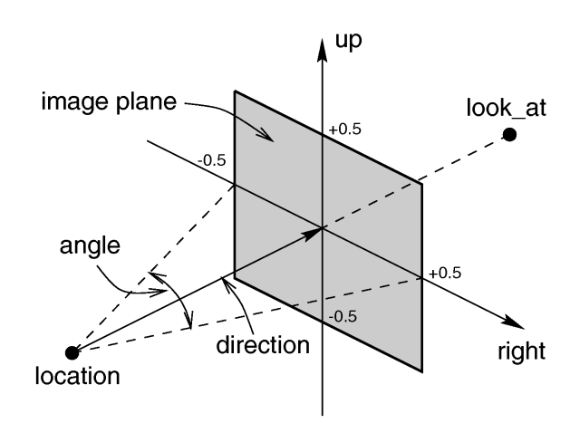 |
|
Basic (default) camera geometry |
3.4.2.1.1 Location and Look_At
Under many circumstances just two vectors in the camera statement are all
you need to position the camera: location and look_at
vectors. For example:
camera {
location <3,5,-10>
look_at <0,2,1>
}
The location is simply the x, y, z coordinates of the camera. The camera
can be located anywhere in the ray-tracing universe. The default location is
<0,0,0>. The look_at vector tells POV-Ray to
pan and tilt the camera until it is looking at the specified x, y, z
coordinates. By default the camera looks at a point one unit in the
z-direction from the location.
The look_at modifier should almost always be the last item in
the camera statement. If other camera items are placed after the
look_at vector then the camera may not continue to look at the
specified point.
3.4.2.1.2 The Sky Vector
Normally POV-Ray pans left or right by rotating about the y-axis until it
lines up with the look_at point and then tilts straight up or
down until the point is met exactly. However you may want to slant the camera
sideways like an airplane making a banked turn. You may change the tilt of
the camera using the sky vector. For example:
camera {
location <3,5,-10>
sky <1,1,0>
look_at <0,2,1>
}
This tells POV-Ray to roll the camera until the top of the camera is in
line with the sky vector. Imagine that the sky vector is an antenna pointing
out of the top of the camera. Then it uses the sky vector as the
axis of rotation left or right and then to tilt up or down in line with the
sky until pointing at the look_at point. In effect
you are telling POV-Ray to assume that the sky isn't straight up.
The sky vector does nothing on its own. It only modifies the
way the look_at vector turns the camera. The default value is
sky <0,1,0>.
3.4.2.1.3 Angles
The angle keyword followed by a float expression specifies
the (horizontal) viewing angle in degrees of the camera used. Even though it
is possible to use the direction vector to determine the viewing
angle for the perspective camera it is much easier to use the
angle keyword.
When you specify the angle, POV-Ray adjusts the length of the
direction vector accordingly. The formula used is
direction_length = 0.5 * right_length / tan(angle / 2) where
right_length is the length of the right vector. You should
therefore specify the direction and right vectors
before the angle keyword. The right vector is
explained in the next section.
There is no limitation to the viewing angle except for the perspective projection. If you choose viewing angles larger than 360 degrees you will see repeated images of the scene (the way the repetition takes place depends on the camera). This might be useful for special effects.
The spherical camera has the option to also specify a vertical
angle. If not specified it defaults to the horizontal angle/2
For example if you render an image with a 2:1 aspect ratio and map it to a sphere using spherical mapping, it will recreate the scene. Another use is to map it onto an object and if you specify transformations for the object before the texture, say in an animation, it will look like reflections of the environment (sometimes called environment mapping).
3.4.2.1.4 The Direction Vector
You will probably not need to explicitly specify or change the camera
direction vector but it is described here in case you do. It
tells POV-Ray the initial direction to point the camera before moving it with
the look_at or rotate vectors the default value is
direction <0,0,1>. It may also be used to control the
(horizontal) field of view with some types of projection. The length of the
vector determines the distance of the viewing plane from the camera's
location. A shorter direction vector gives a wider view while a
longer vector zooms in for close-ups. In early versions of POV-Ray, this was
the only way to adjust field of view. However zooming should now be done
using the easier to use angle keyword.
If you are using the ultra_wide_angle, panoramic,
or cylindrical projection you should use a unit length
direction vector to avoid strange results. The length of the
direction vector does not matter when using the
orthographic, fisheye, or omnimax projection
types.
3.4.2.1.5 Up and Right Vectors
The primary purpose of the up and right vectors
is to tell POV-Ray the relative height and width of the view screen. The
default values are:
right <image_width/image_height,0,0> up y
In the default perspective camera, these two vectors also
define the initial plane of the view screen before moving it with the
look_at or rotate vectors. The length of the
right vector (together with the direction vector) may
also be used to control the (horizontal) field of view with some types of
projection. The look_at modifier changes both the up
and right vectors. The angle calculation depends on the
right vector.
Most camera types treat the up and right vectors
the same as the perspective type. However several make special
use of them. In the orthographic projection: The lengths of the
up and right vectors set the size of the viewing
window regardless of the direction vector length, which is not
used by the orthographic camera.
When using cylindrical projection: types 1 and 3, the axis of
the cylinder lies along the up vector and the width is
determined by the length of right vector or it may be overridden
with the angle vector. In type 3 the up vector
determines how many units high the image is. For example if you have up
4*y on a camera at the origin. Only points from y=2 to y=-2 are
visible. All viewing rays are perpendicular to the y-axis. For type 2 and 4,
the cylinder lies along the right vector. Viewing rays for type
4 are perpendicular to the right vector.
See Also: Aspect Ratio
Note: The up, right, and direction vectors should always remain perpendicular to each other or the image will be distorted. If this is not the case a warning message will be printed. The vista buffer will not work for non-perpendicular camera vectors.
3.4.2.1.6 Aspect Ratio
Together the right (width) and up (height) vectors define the aspect ratio of the resulting image.
A Change in version 3.8 redefines how the right vector default is derived. The default setting is now right <image_width/image_height,0,0> as opposed to the right <1.33,0,0> value used in previous versions. Requires #version 3.8; or equivalent INI setting or command-line option. See also: Version Directive. As usual, the image width and height can be specified from either the pull down menu available in GUI versions ONLY or the +Wn and +Hn command-line options available to ALL versions. The default up vector remains as <0,1,0>.
To retain legacy behavior see the example below:
#version X.y; // X.y is a version less than 3.8
camera {
location <3,5,-10>
look_at <0,2,1>
}
3.4.2.1.7 Handedness
The right vector also describes the direction to the right of
the camera. It tells POV-Ray where the right side of your screen is. The sign
of the right vector can be used to determine the handedness of
the coordinate system in use. The default value is:
right <image_width/image_height,0,0>. This means that the +x-direction is to the
right. It is called a left-handed system because you can use your
left hand to keep track of the axes. Hold out your left hand with your palm
facing to your right. Stick your thumb up. Point straight ahead with your
index finger. Point your other fingers to the right. Your bent fingers are
pointing to the +x-direction. Your thumb now points into +y-direction. Your
index finger points into the +z-direction.
To use a right-handed coordinate system, as is popular in some CAD programs
and other ray-tracers, make the same shape using your right hand. Your thumb
still points up in the +y-direction and your index finger still points
forward in the +z-direction but your other fingers now say the +x-direction
is to the left. That means that the right side of your screen is now in the
-x-direction. To tell POV-Ray to act like this you can use a negative x value
in the right vector such as:
right <-image_width/image_height,0,0>. Since having x values increasing to the left
does not make much sense on a 2D screen you now rotate the whole thing 180
degrees around by using a positive z value in your camera's location. You
end up with something like this.
camera {
location <0,0,10>
up <0,1,0>
right <-image_width/image_height,0,0>
look_at <0,0,0>
}
Now when you do your ray-tracer's aerobics, as explained in the section Understanding POV-Ray's Coordinate System, you use your right hand to determine the direction of rotations.
In a two dimensional grid, x is always to the right and y is up. The two versions of handedness arise from the question of whether z points into the screen or out of it and which axis in your computer model relates to up in the real world.
Architectural CAD systems, like AutoCAD, tend to use the God's Eye orientation that the z-axis is the elevation and is the model's up direction. This approach makes sense if you are an architect looking at a building blueprint on a computer screen. z means up, and it increases towards you, with x and y still across and up the screen. This is the basic right handed system.
Stand alone rendering systems, like POV-Ray, tend to consider you as a participant. You are looking at the screen as if you were a photographer standing in the scene. The up direction in the model is now y, the same as up in the real world and x is still to the right, so z must be depth, which increases away from you into the screen. This is the basic left handed system.
3.4.2.1.8 Transforming the Camera
The various transformations such as translate and
rotate modifiers can re-position the camera once you have defined
it. For example:
camera {
location <0,0,0>
direction <0,0,1>
up <0,1,0>
right <1,0,0>
rotate <30,60,30>
translate <5,3,4>
}
In this example, the camera is created, then rotated by 30 degrees about the x-axis, 60 degrees about the y-axis and 30 degrees about the z-axis, then translated to another point in space.
3.4.2.2 Types of Projection
| 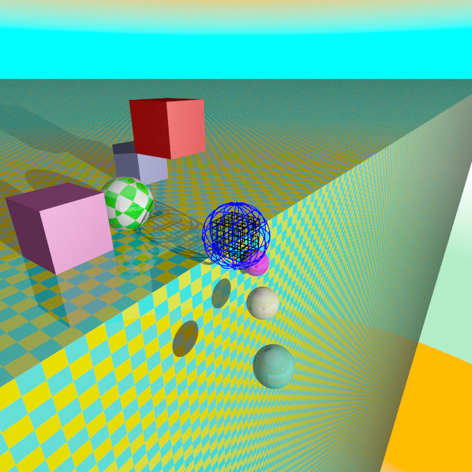 |
The following sections explain the different projection types that can be used with the scene camera. The most common types are the perspective and orthographic projections. The CAMERA_TYPE should be the first item in a |
|
The camera sample scene global view |
Note: The vista buffer feature can only be used with the perspective and orthographic camera.
3.4.2.2.1 Perspective projection
The perspective keyword specifies the default perspective camera which simulates the classic pinhole camera. The horizontal viewing angle is either determined by the ratio between the length of the direction vector and the length of the right vector or by the optional keyword angle, which is the preferred way. The viewing angle has to be larger than 0 degrees and smaller than 180 degrees.
| 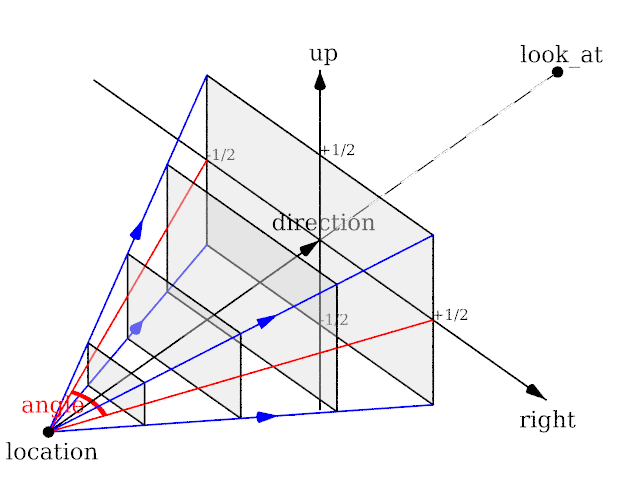 | 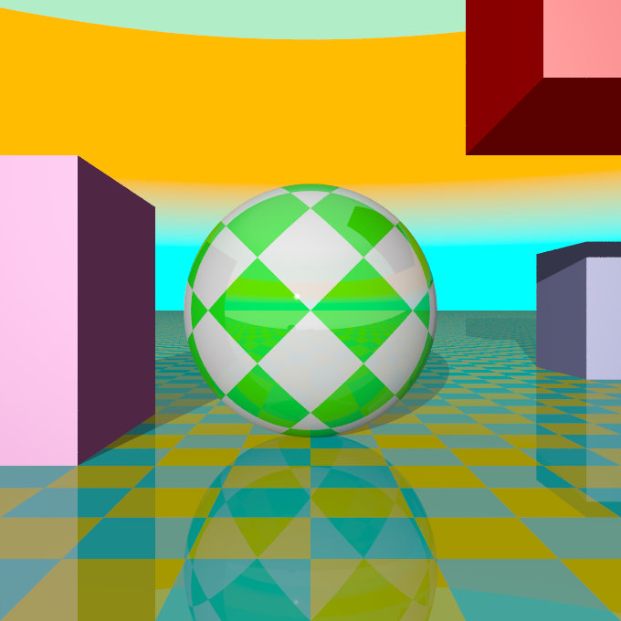 |
|
The perspective projection diagram |
A perspective camera sample image |
Note: The angle keyword can be used as long as less than 180 degrees. It recomputes the length of right and up vectors using direction. The proper aspect ratio between the up and right vectors is maintained.
3.4.2.2.2 Orthographic projection
The orthographic camera offers two modes of operation:
The pure orthographic projection. This projection uses parallel camera rays to create an image of the scene. The area of view is determined by the lengths of the right and up vectors. One of these has to be specified, they are not taken from the default camera. If omitted the second method of the camera is used.
If, in a perspective camera, you replace the perspective keyword by orthographic and leave all other parameters the same, you will get an orthographic view with the same image area, i.e. the size of the image is
the same. The same can be achieved by adding the angle keyword to an orthographic camera. A value for the angle is optional. So this second mode is active if no up and right are within the camera statement, or when the angle keyword is within the camera statement.
You should be aware though that the visible parts of the scene change when switching from perspective to orthographic view. As long as all objects of interest are near the look_at point they will be still visible if the orthographic camera is used. Objects farther away may get out of view while nearer objects will stay in view.
If objects are too close to the camera location they may disappear. Too close here means, behind the orthographic camera projection plane (the plane that goes through the location point).
| 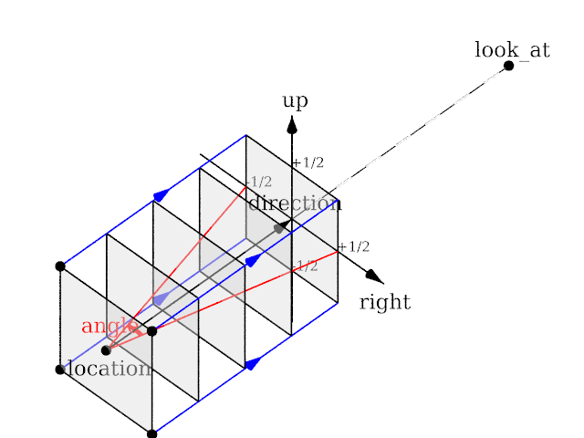 | 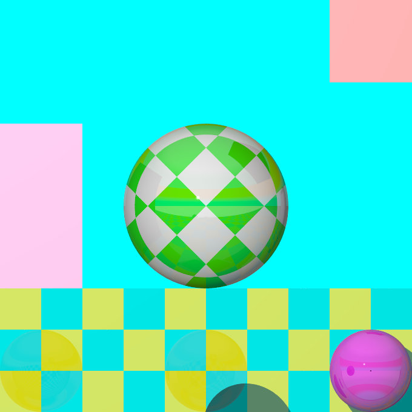 |
|
The orthographic projection diagram |
An orthographic camera sample image |
Note: The length of direction is irrelevant unless angle is used. The lengths of up and right define the dimensions of the view. The angle keyword can be used, as long as less than 180. It will override the length of the right and up vectors (the aspect ratio between up and right will be kept nevertheless) with a scope of a perspective camera having the same direction and angle.
3.4.2.2.3 Mesh projection
The mesh projection is a special camera type that allows complete control of the ray origin and direction for each pixel of the output image. The basic concept is to associate pixels with faces defined within a previously declared mesh or mesh2 object. The MESH_OBJECT_IDENTIFIER need not be instantiated in the scene, though it can be, and doing so can lead to some interesting uses, such as texture baking or illumination calculations.
In its simplest form, each pixel of the output image is assigned to a face of the mesh according to (width * (int) y) + (int) x, however, more complex mapping is possible via multiple meshes and multiple rays per pixel. The type of mapping in use is determined by the distribution type parameter in the camera declaration. Except for mapping #3, the ray origin will be set to the centroid of the face, and the direction will be that of the face's normal. For mapping #3, barycentric co-ordinates are determined from the UV co-ordinates of the first face to match the X and Y position, and those are then converted to a position on the face which will serve as the ray origin. Support is provided to move the origin off the face along the normal, and to reverse the ray direction.
For most of the distribution methods, any POV feature that causes sub-pixel positioning to be used for shooting rays (e.g. anti-aliasing or jitter) will not do anything useful, because X and Y are converted to integers for indexing purposes. At this time, no warning is issued if anti-aliasing or jitter is requested when rendering a non-applicable distribution; this may be added later.
The syntax for the mesh camera is as follows:
camera {
mesh_camera {
rays per pixel
distribution type
[max distance]
mesh {
MESH_OBJECT_IDENTIFIER
[TRANSFORMATIONS]
}
[mesh ...]
}
[location]
[direction]
[smooth]
}
Note: The mesh camera is an experimental feature introduced in version 3.7 beta 39 and its syntax is likely to change. Additionally, many of the normal camera concepts presented in this section (such as location and direction) either do not work as they do for other cameras or do not work at all (for example, the concept of 'up' simply does not apply to a mesh camera). It should also be kept in mind that the camera has not yet been tested with many of POV-Ray's advanced features such as photons and radiosity, and more work in that area is likely to be needed.
3.4.2.2.3.1 Rays Per Pixel
This float parameter controls the number of rays that will be shot for each pixel in the output image. Each distribution allows different values, but the minimum is always 1.
3.4.2.2.3.2 Distribution Type
This float parameter controls how pixels are assigned to faces as documented below:
- distribution #0
This method allows single or multiple rays per pixel, with the ray number for that pixel allocated to each mesh in turn. The index into the meshes is the ray number, where rays per pixel is greater than one, and the index into the selected mesh is the pixel number within the output image. If there is no face at that pixel position, the resulting output pixel is unaffected.
You must supply at least as many meshes as rays per pixel. Each pixel is shot rays per pixel times, and the results averaged. Any ray that does not correspond with a face (i.e. the pixel number is greater than or equal to the face count) does not affect the resulting pixel color. Generally, it would be expected that the number of faces in each mesh is the same, but this is not a requirement. Keep in mind that a ray that is not associated with a face is not the same thing as a ray that is but that, when shot, hits nothing. The latter will return a pixel (even if it is transparent or the background color), whereas the former causes the ray to not be shot in the first place; hence, it is not included in the calculation of the average for the pixel.
Using multiple rays per pixel is useful for generating anti-aliasing (since standard AA won't work) or for special effects such as focal blur, motion blur, and so forth, with each additional mesh specified in the camera representing a slightly different camera position.
Note: It is legal to use transformations on meshes specified in the camera body, hence it's possible to obtain basic anti-aliasing by using a single mesh multiple times, with subsequent ones jittered slightly from the first combined with a suitable rays per pixel count.
- distribution #1
This method allows both multiple rays per pixel and summing of meshes, in other words the faces of all the supplied meshes are logically summed together as if they were one single mesh. In this mode, if you specify more than one ray per pixel, the second ray for a given pixel will go to the face at (width * height * ray_number) + pixel_number, where ray_number is the count of rays shot into a specific pixel. If the calculated face index exceeds the total number of faces for all the meshes, no ray is shot.
The primary use for this summing method is convenience in generation of the meshes, as some modelers slow down to an irritating extent with very large meshes. Using distribution #1 allows these to be split up.
- distribution #2
Distribution method 2 is a horizontal array of sub-cameras, one per mesh (i.e. like method #0, it does not sum meshes). The image is divided horizontally into #num_meshes blocks, with the first mesh listed being the left-most camera, and the last being the right-most. The most obvious use of this would be with two meshes to generate a stereo camera arrangement.
In this mode, you can (currently) only have a single ray per pixel.
- distribution #3
This method will reverse-map the face from the UV co-ordinates. Currently, only a single ray per pixel is supported, however, unlike the preceding methods, standard AA and jitter will work. This method is particularly useful for texture baking and resolution-independent mesh cameras, but requires that the mesh have a UV map supplied with it.
You can use the smooth modifier to allow interpolation of the normals at the vertices. This allows for use of UV mapped meshes as cameras with the benefit of not being resolution dependent, unlike the other distributions. The interpolation is identical to that used for smooth_triangles.
If used for texture baking, the generated image may have visible seams when applied back to the mesh, this can be mitigated. Also, depending on the way the original UV map was set up, using AA may produce incorrect pixels on the outside edge of the generated maps.
3.4.2.2.3.3 Max Distance
This is an optional floating-point value which, if greater than EPSILON (a very small value used internally for comparisons with 0), will be used as the limit for the length of any rays cast. Objects at a distance greater than this from the ray origin will not be intersected by the ray. The primary use for this parameter is to allow a mesh camera to 'probe' a scene in order to determine whether or not a given location contains a visible object. Two examples would be a camera that divides the scene into slices for use in 3d printing or to generate an STL file, and a camera that divides the scene into cubes to generate voxel information. In both cases, some external means of processing the generated image into a useful form would be required. It should be kept in mind that this method of determining spatial information is not guaranteed to generate an accurate result, as it is entirely possible for a ray to miss an object that is within its section of the scene, should that object have features that are smaller than the resolution of the mesh being used. In other words, it is (literally) hit and miss. This issue is conceptually similar to aliasing in a normal render. It is left as an exercise for the reader to come up with means of generating pixel information that carries useful information, given the lack of light sources within the interior of an opaque object (hint: try ambient).3.4.2.2.3.4 Mesh Object
One or more mesh or mesh2 objects to be used for the camera. These will be treated differently depending on the distribution method, as explained above. Transformations on the meshes can be used here, and will reflect on the resulting image as it would be expected for a regular camera.
3.4.2.2.3.5 About the Location Vector
With this special camera, location doesn't affect where the camera is placed per se (that information is on the mesh object itself), but is used to move the origin of the ray off the face, along the normal of that face. This would typically be done for texture baking or illumination calculation scenes where the camera mesh is also instantiated into the scene, usually only a tiny amount of displacement is needed. The X and Y for location is not currently used, and the Z always refers to the normal of the face, rather than the real Z direction in the scene.
3.4.2.2.3.6 About the Direction Vector
Like location, this doesn't correspond to the real direction vector of the camera. It serves only to reverse the normal of all the faces, if necessary. If the Z component is less than -EPSILON, then the rays will be shot in the opposite direction than they would otherwise have been. X and Y are not used.
3.4.2.2.3.7 The Smooth Modifier
This optional parameter is only useful with distribution #3, and will cause the ray direction to be interpolated according to the same rules as are applied to smooth triangles. For this to work, the mesh must have provided a normal for each vertex.
Note: See the sample scene files located in ~scenes/camera/mesh_camera/ for additional usages and other samples of mesh cameras. There are also some useful macros to assist in generating and processing meshes for use as cameras.
3.4.2.2.4 Fisheye projection
This is a spherical projection. The viewing angle is specified by the angle keyword. An angle of 180 degrees creates the "standard" fisheye while an angle of 360 degrees creates a super-fisheye or "I-see-everything-view". If you use this projection you should get a circular image. If this is not the case, i.e. you get an elliptical image, you should read Aspect Ratio.
| 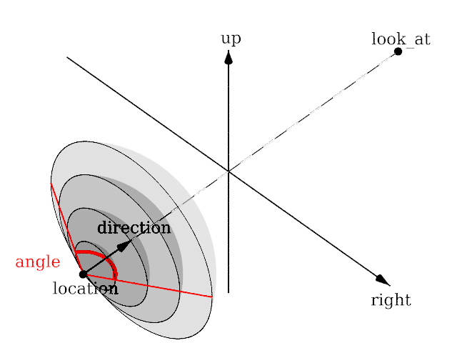 | 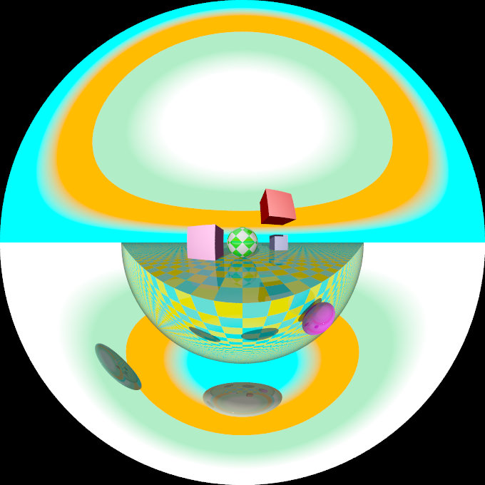 |
|
The fisheye projection diagram |
A fisheye camera sample image |
Note: The length of the direction, up and right vectors are irrelevant. The angle keyword is the important setting.
3.4.2.2.5 Ultra wide angle projection
The ultra wide angle projection is somewhat similar to the fisheye, but it projects the image onto a rectangle instead of a circle. The viewing angle can be specified by using the angle keyword. The aspect ratio of the lengths of the up/right vectors are used to provide the vertical angle from the horizontal angle, so that the ratio of vertical angle on horizontal angle is identical to the ratio of the length of up on length of right. When the ratio is one, a square is wrapped on a quartic surface defined as follows:
x2+y2+z2 = x2y2 + 1
The section where z=0 is a square, the section where x=0 or y=0 is a circle, and the sections parallel to x=0 or y=0 are ellipses. When the ratio is not one, the bigger angle obviously gets wrapped further. When the angle reaches 180, the border meets the square section. The angle can be greater than 180, in that case, when both (vertical and horizontal) angles are greater than 180, the parts around the corners of the square section will be wrapped more than once. The classical usage (using an angle of 360) but with a up/right ratio of 1/2 up 10*y and right 20*x will keep the top of the image as the zenith, and the bottom of the image as the nadir, avoiding perception issues and giving a full 360 degree view.
| 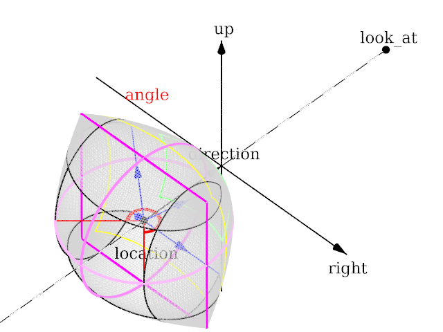 | 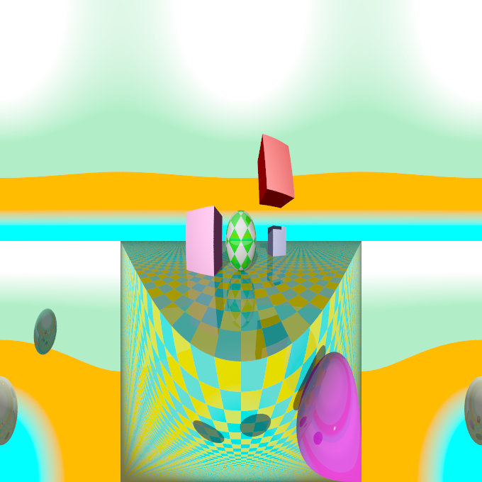 |
|
The ultra wide angle projection diagram |
An ultra wide angle sample image |
3.4.2.2.6 Omnimax projection
The omnimax projection is a 180 degrees fisheye that has a reduced viewing angle in the vertical direction. In reality this projection is used to make movies that can be viewed in the dome-like Omnimax theaters. The image will look somewhat elliptical.
| 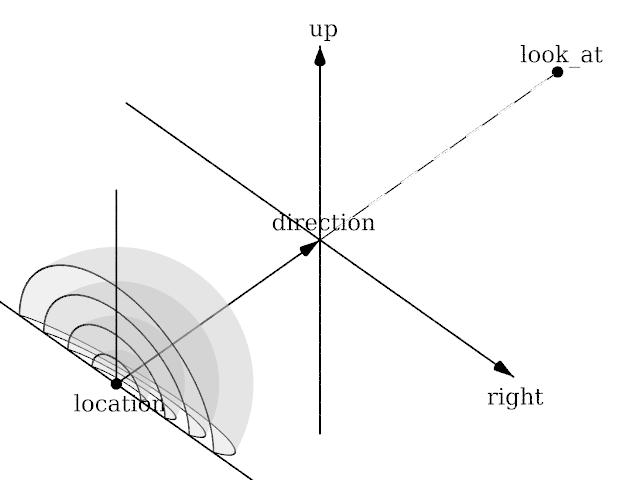 | 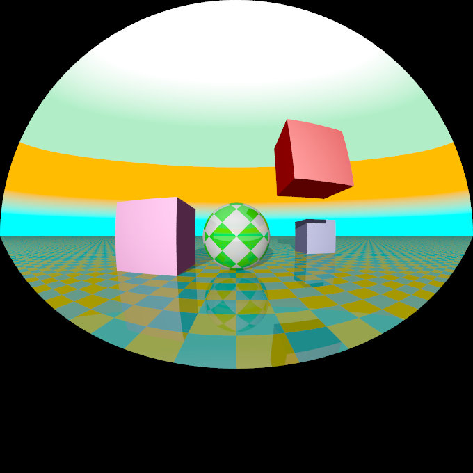 |
|
The omnimax projection diagram |
An omnimax camera sample image |
Note: The use of the angle keyword is irrelevant, the relative length of up and right vectors are what is important.
3.4.2.2.7 Panoramic projection
This projection is called "cylindrical equirectangular projection". It overcomes the degeneration problem of the perspective projection if the viewing angle approaches 180 degrees. It uses a type of cylindrical projection to be able to use viewing angles larger than 180 degrees with a tolerable lateral-stretching distortion. The angle keyword is used to determine the viewing angle.
| 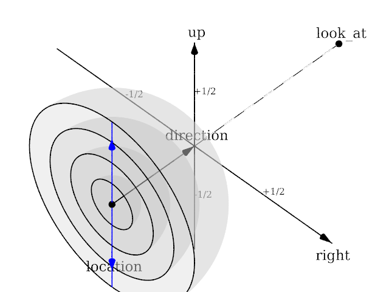 | 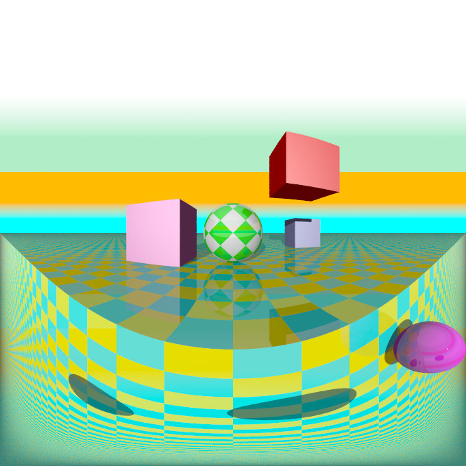 |
|
The panoramic projection diagram |
A panoramic camera sample image |
Note: The angle keyword is irrelevant. The relative length of direction, up and right vectors are important as they define the lengths of the 3 axis of the ellipsoid. With identical length and orthogonal vectors (both strongly recommended, unless used on purpose), it's identical to a spherical camera with angle 180,90.
3.4.2.2.8 Cylindrical projection
Using this projection the scene is projected onto a cylinder. There are four different types of cylindrical projections depending on the orientation of the cylinder and the position of the viewpoint. An integer value in the range 1 to 4 must follow the cylinder keyword. The viewing angle and the length of the up or right vector determine the dimensions of the camera and the visible image. The characteristics of different types are as follows:
- vertical cylinder, fixed viewpoint
- horizontal cylinder, fixed viewpoint
- vertical cylinder, viewpoint moves along the cylinder's axis
- horizontal cylinder, viewpoint moves along the cylinder's axis
| 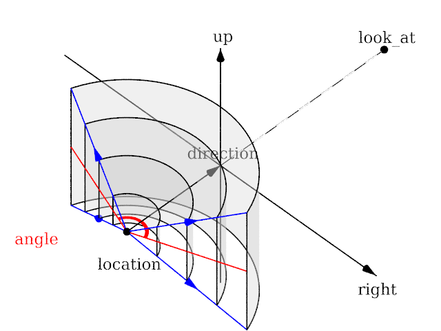 | 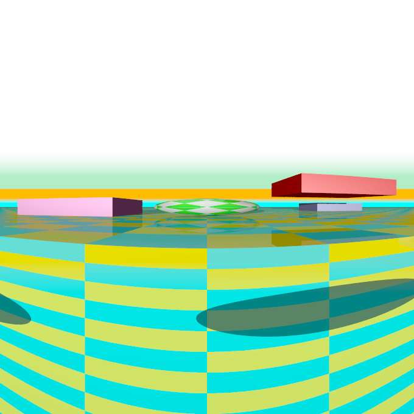 |
|
The type 1 cylindrical projection diagram |
A type 1 cylindrical camera sample image |
| 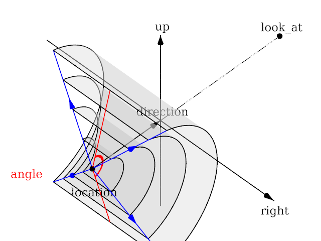 | 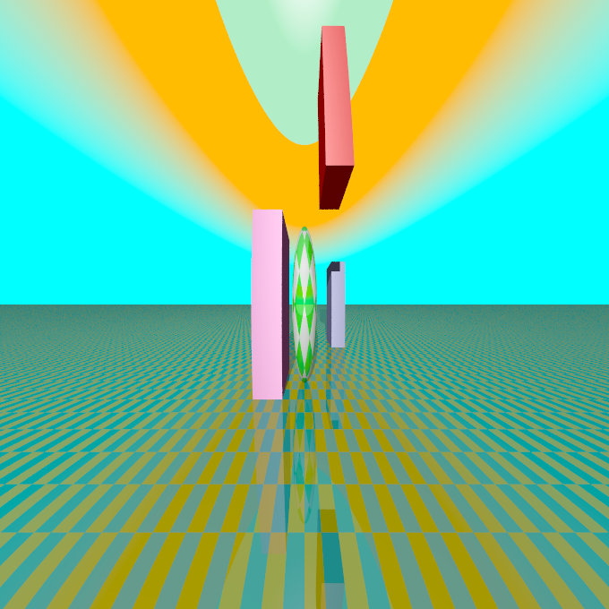 |
|
The type 2 cylindrical projection diagram |
A type 2 cylindrical camera sample image |
| 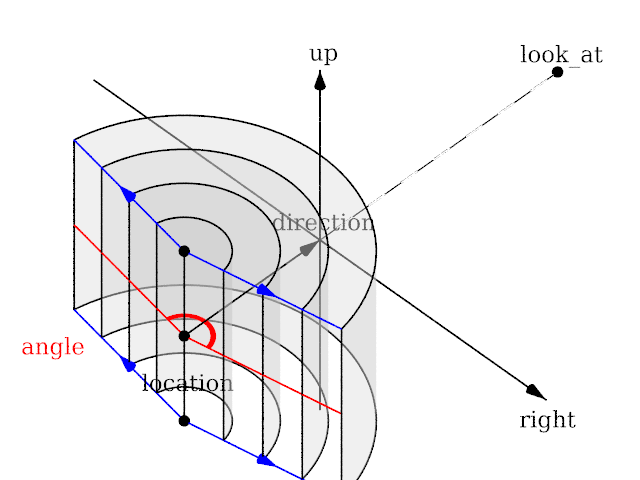 | 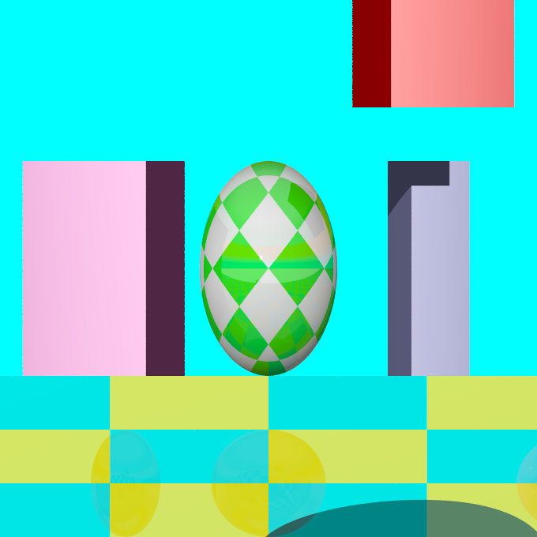 |
|
The type 3 cylindrical projection diagram |
A type 3 cylindrical camera sample image |
| 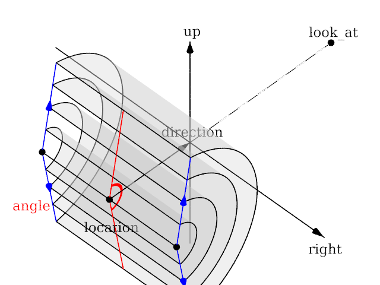 | 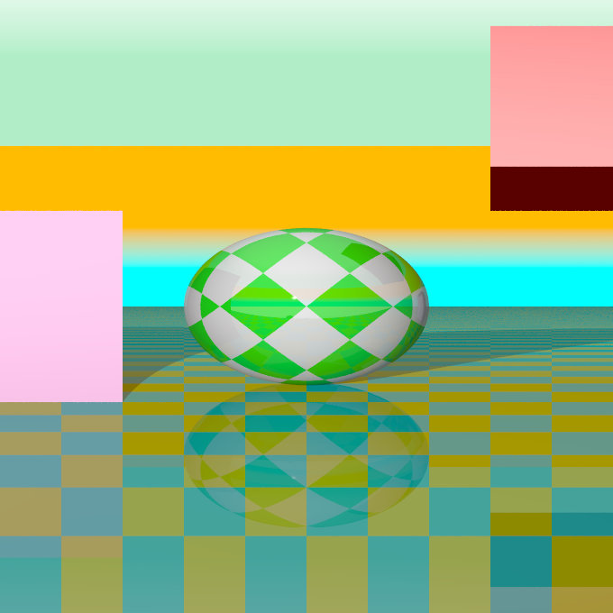 |
|
The type 4 cylindrical projection diagram |
A type 4 cylindrical camera sample image |
3.4.2.2.9 Spherical projection
Using this projection the scene is projected onto a sphere.
The syntax is:
camera {
spherical
[angle HORIZONTAL [VERTICAL]]
[CAMERA_ITEMS...]
}
The first value after angle sets the horizontal viewing angle of the camera. With the optional second value, the vertical viewing angle is set: both in degrees. If the vertical angle is not specified, it defaults to half the horizontal angle.
The spherical projection is similar to the fisheye projection, in that the scene is projected on a sphere. But unlike the fisheye camera, it uses rectangular coordinates instead of polar coordinates; in this it works the same way as spherical mapping (map_type 1).
This has a number of uses. Firstly, it allows an image rendered with the spherical camera to be mapped on a sphere without distortion (with the fisheye camera, you first have to convert the image from polar to rectangular coordinates in some image editor). Also, it allows effects such as "environment mapping", often used for simulating reflections in scanline renderers.
| 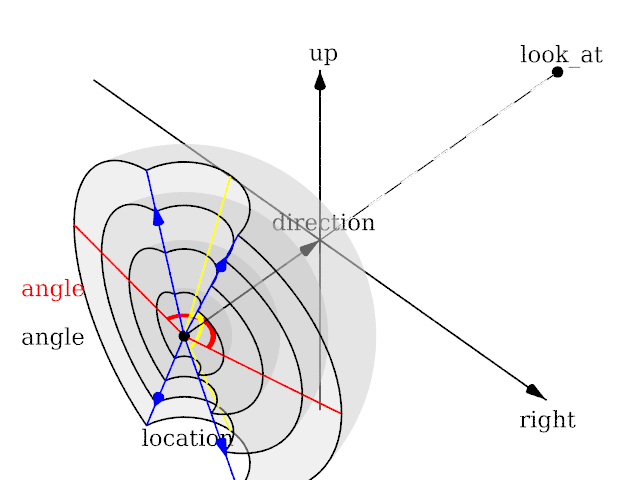 | 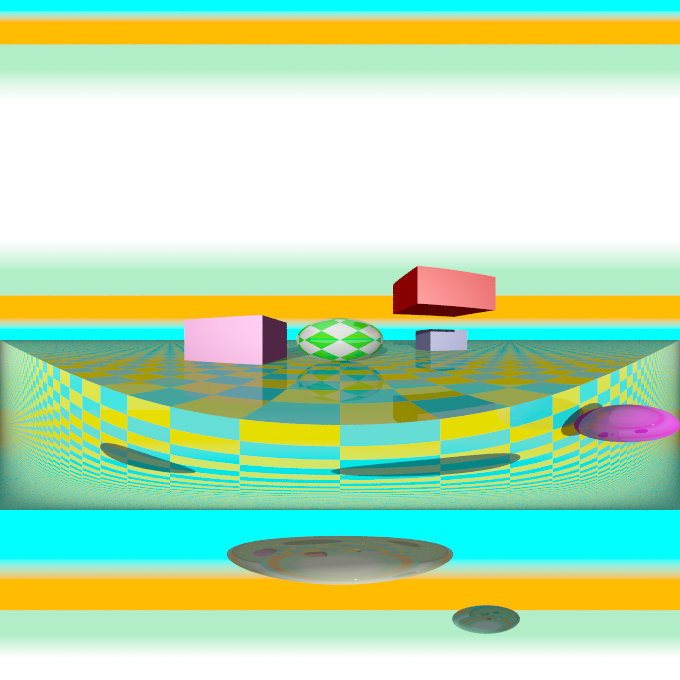 |
|
The spherical projection diagram |
A spherical camera sample image |
Note: The lengths of the direction, up and right vectors are irrelevant. Angle is the important setting, and it gets two values separated by a comma: the first is the horizontal angle, the second is the vertical angle. Both values can reach 360. If the second value is missing, it is set to half the value of the first.
3.4.2.2.10 User defined projection
New to version 3.8 a user defined camera capability was added. Similar to the mesh camera the user_defined camera allows complete control over ray origin and direction, with the advantage of not having to actually load a mesh to function. It's inner workings are also less constrained than the mesh camera.
In addition to being able to duplicate existing camera types, this mechanism can also be easily used for other arbitrary camera formats waiting to be integrated into POV-Ray. This includes light probe style, angular, cube mapping, side-by-side stereo-grams, Omni-Directional Stereo (ODS), Mercator, and other map projections.
The specified functions take screen coordinates in the form of (x,y or u,v) vector pairs as parameters ranging from -0.5 (left/bottom) to 0.5 (right/top), respectively.
See the examples below:
// Basic orthographic
#declare Camera01 = camera {
user_defined
location {
function { x }
function { y }
function { -5 }
}
direction {
function { 0 }
function { 0 }
function { 1 }
}
}
// Only direction functions specified
#declare Camera01 = camera {
user_defined
direction {
function { x }
function { y }
function { 1 }
}
location <0,0,-2>
rotate y*5
}
// Only location functions specified
#declare Camera01 = camera {
user_defined
location {
function { x }
function { y }
function { -5 }
}
look_at <0,0,1>
}
See the distribution scene file ~scenes/camera/user_defined.pov for additional usage.
3.4.2.3 Focal Blur
POV-Ray can simulate focal depth-of-field by shooting a number of sample rays from jittered points within each pixel and averaging the results.
To turn on focal blur, you must specify the aperture keyword followed by a float value which determines the depth of the sharpness zone. Large apertures give a lot of blurring, while narrow apertures will give a wide zone of sharpness.
Note: While this behaves as a real camera does, the values for aperture are purely arbitrary and are not related to f-stops.
You must also specify the blur_samples keyword followed by an integer value specifying the maximum number of rays to use for each pixel. More rays give a smoother appearance but is slower. By default no focal blur is used, i. e. the default aperture is 0 and the default number of samples is 0.
The center of the zone of sharpness is specified by the focal_point vector. The zone of sharpness is a plane through the focal_point and is parallel to the camera. Objects close to this plane of focus are in focus and those farther from that plane are more blurred. The default value is focal_point <0,0,0>.
Although blur_samples specifies the maximum number of samples, there is an adaptive mechanism that stops shooting rays when a certain degree of confidence has been reached. At that point, shooting more rays would not result in a significant change.
Extra samples are generated in a circular rather than square pattern when blur_samples is not set to either 4, 7, 19 or 37, leading to a circular rather than square bokeh. The extra samples are generated from a Halton sequence rather than a random stream. You can also optionally specify a minimum number of samples to be taken before testing against the confidence and variance settings. The default is 4, if the blur_samples maximum is less than 7, otherwise the default is 7, to provide a means to get rid of stray non-blurred pixels.
The syntax is:
blur_samples [ MIN_SAMPLES, ] MAX_SAMPLES
The confidence and
variance keywords are followed by float values to control the adaptive function. The confidence value is used to determine when the samples seem to be close enough to the correct color. The variance value specifies an acceptable tolerance on the variance of the samples taken so far. In other words, the process of shooting sample rays is terminated when the estimated color value is very likely (as controlled by the confidence probability) near the real color value.
Since the confidence is a probability its values can range from 0 to less than 1 (the default is 0.9, i. e. 90%). The value for the variance should be in the range of the smallest displayable color difference (the default is 1/128). If 1 is used POV-Ray will issue a warning and then use the default instead.
Rendering with the default settings can result in quite grainy images. This can be improved by using a lower variance. A value of 1/10000 gives a fairly good result (with default confidence and blur_samples set to something like 100) without being unacceptably slow.
Larger confidence values will lead to more samples, slower traces and better images. The same holds for smaller variance thresholds.
Focal blur can also support a user-defined bokeh using the following syntax:
camera {
// ... focal blur camera definition
bokeh {
pigment { ... }
}
}
If bokeh is specified, focal blur will use a custom sampling sequence based on the specified pigment's brightness in the range <0,0,0> to <1,1,0> i.e. the unit square in the XY plane.
3.4.2.4 Camera Ray Perturbation
The optional normal may be used to assign a normal pattern to
the camera. For example:
camera{
location Here
look_at There
normal { bumps 0.5 }
}
All camera rays will be perturbed using this pattern. The image will be distorted as though you were looking through bumpy glass or seeing a reflection off of a bumpy surface. This lets you create special effects. See the animated scene camera2.pov for an example. See Normal for information on normal patterns.
3.4.2.5 Camera Identifiers
Camera identifiers may be declared to make scene files more readable and to parameterize scenes so that changing a single declaration changes many values. You may declare several camera identifiers if you wish. This makes it easy to quickly change cameras. An identifier is declared as follows.
CAMERA_DECLARATION: #declare IDENTIFIER = CAMERA | #local IDENTIFIER = CAMERA
Where IDENTIFIER is the name of the identifier up to 40 characters long and CAMERA is any valid camera statement. See #declare vs. #local for information on identifier scope. Here is an example...
#declare Long_Lens =
camera {
location -z*100
look_at <0,0,0>
angle 3
}
#declare Short_Lens =
camera {
location -z*50
look_at <0,0,0>
angle 15
}
camera {
Long_Lens // edit this line to change lenses
translate <33,2,0>
}
Note: Only camera transformations can be added to an already declared camera. Camera behaviour changing keywords are not allowed, as they are needed in an earlier stage for resolving the keyword order dependencies.
3.4.3 Lighting Types
POV-Ray supports several lighting types. The most basic being a highly configurable conventional light source. Scenes can have more than one light source, and light sources can be grouped together with other objects and/or light sources. POV-Ray also supports more sophisticated lighting models such as: global illumination or radiosity and photon mapping.
3.4.3.1 Light Source
The light_source is not really an object. Light sources have no visible shape of their own. They are just points or areas which emit light. They are categorized as objects so that they can be combined with regular objects using union.
Note: Due to a hard-coded limit the number of light sources should not exceed 127. Since the class of the variable that governs this limit is not exclusive to light sources, a value had to be chosen that provides the best balance between performance, memory use and flexibility. See the following news-group discussion for more details and information about ways to overcome this limitation.
The syntax is as follows:
LIGHT_SOURCE:
light_source {
<Location>, COLOR
[LIGHT_MODIFIERS...]
}
LIGHT_MODIFIER:
LIGHT_TYPE | SPOTLIGHT_ITEM | AREA_LIGHT_ITEMS |
GENERAL_LIGHT_MODIFIERS
LIGHT_TYPE:
spotlight | shadowless | cylinder | parallel
SPOTLIGHT_ITEM:
radius Radius | falloff Falloff | tightness Tightness |
point_at <Spot>
PARALLEL_ITEM:
point_at <Spot>
AREA_LIGHT_ITEM:
area_light <Axis_1>, <Axis_2>, Size_1, Size_2 |
adaptive Adaptive | area_illumination [Bool] |
jitter | circular | orient
GENERAL_LIGHT_MODIFIERS:
looks_like { OBJECT } |
TRANSFORMATION fade_distance Fade_Distance |
fade_power Fade_Power | media_attenuation [Bool] |
media_interaction [Bool] | projected_through
Light source default values:
LIGHT_TYPE : pointlight falloff : 70 media_interaction : on media_attenuation : off point_at : <0,0,1> radius : 70 tightness : 10
The different types of light sources and the optional modifiers are described in the following sections.
The first two items are common to all light sources. The <Location>
vector gives the location of the light. The COLOR gives the color
of the light. Only the red, green, and blue components are significant. Any
transmit or filter values are ignored.
Note: You vary the intensity of the light as well as the color using this parameter. A color such as
rgb <0.5,0.5,0.5> gives a white light that is half the normal intensity.
All of the keywords or items in the syntax specification above may appear in any order. Some keywords only have effect if specified with other keywords. The keywords are grouped into functional categories to make it clear which keywords work together. The GENERAL_LIGHT_MODIFIERS work with all types of lights and all options.
Note: TRANSFORMATIONS such as translate, rotate etc. may be applied but no other OBJECT_MODIFIERS may be used.
There are three mutually exclusive light types. If no LIGHT_TYPE is
specified it is a point light. The other choices are spotlight
and cylinder.
3.4.3.1.1 Point Lights
The simplest kind of light is a point light. A point light source sends
light of the specified color uniformly in all directions. The default light
type is a point source. The <Location> and
COLOR is all that is required. For example:
light_source {
<1000,1000,-1000>, rgb <1,0.75,0> //an orange light
}
3.4.3.1.2 Spotlights
Normally light radiates outward equally in all directions from the source.
However the spotlight keyword can be used to create a cone of
light that is bright in the center and falls of to darkness in a soft fringe
effect at the edge.
Although the cone of light fades to soft edges, objects illuminated by spotlights still cast hard shadows. The syntax is:
SPOTLIGHT_SOURCE:
light_source {
<Location>, COLOR spotlight
[LIGHT_MODIFIERS...]
}
LIGHT_MODIFIER:
SPOTLIGHT_ITEM | AREA_LIGHT_ITEMS | GENERAL_LIGHT_MODIFIERS
SPOTLIGHT_ITEM:
radius Radius | falloff Falloff | tightness Tightness |
point_at <Spot>
Default values:
radius: 30 degrees falloff: 45 degrees tightness: 0
The point_at keyword tells the spotlight to point at a
particular 3D coordinate. A line from the location of the spotlight to the
point_at coordinate forms the center line of the cone of light.
The following illustration will be helpful in understanding how these values
relate to each other.
| 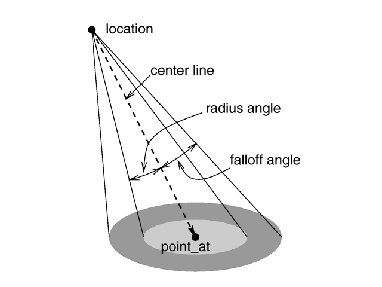 |
|
The geometry of a spotlight. |
The falloff, radius, and tightness
keywords control the way that light tapers off at the edges of the cone.
These four keywords apply only when the spotlight or
cylinder keywords are used.
The falloff keyword specifies the overall size of the cone of
light. This is the point where the light falls off to zero intensity. The
float value you specify is the angle, in degrees, between the edge of the
cone and center line. The radius keyword specifies the size of
the hot-spot at the center of the cone of light. The
hot-spot is a brighter cone of light inside the spotlight cone
and has the same center line. The radius value specifies the
angle, in degrees, between the edge of this bright, inner cone and the center
line. The light inside the inner cone is of uniform intensity. The light
between the inner and outer cones tapers off to zero.
For example, assuming a tightness 0, with radius 10 and falloff 20 the light
from the center line out to 10 degrees is full intensity. From 10 to 20
degrees from the center line the light falls off to zero intensity. At 20
degrees or greater there is no light.
Note: If the radius and falloff values are close or equal the light intensity drops rapidly and the spotlight has a sharp edge.
The values for the radius, and tightness parameters are half the opening angles of the
corresponding cones, both angles have to be smaller than 90 degrees. The
light smoothly falls off between the radius and the falloff angle like shown
in the figures below (as long as the radius angle is not negative).
| 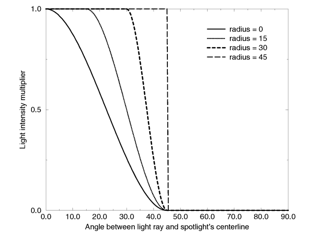 |
|
Intensity multiplier curve with a fixed falloff angle of 45 degrees. |
| 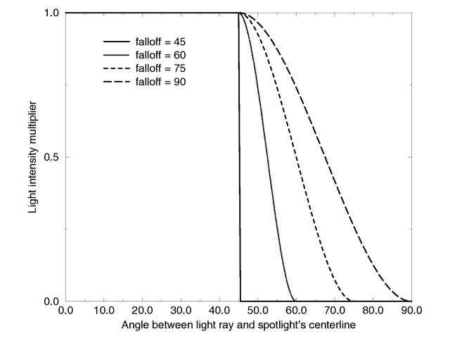 |
|
Intensity multiplier curve with a fixed radius angle of 45 degrees. |
The tightness keyword is used to specify an
additional exponential softening of the edges. A value other than 0, will
affect light within the radius cone as well as light in the falloff cone.
The intensity of light at an angle from the center line is given by:
intensity * cos(angle)tightness.
The default value for tightness is 0. Lower
tightness values will make the spotlight brighter, making the spot wider and
the edges sharper. Higher values will dim the spotlight, making the spot
tighter and the edges softer. Values from 0 to 100 are acceptable.
| 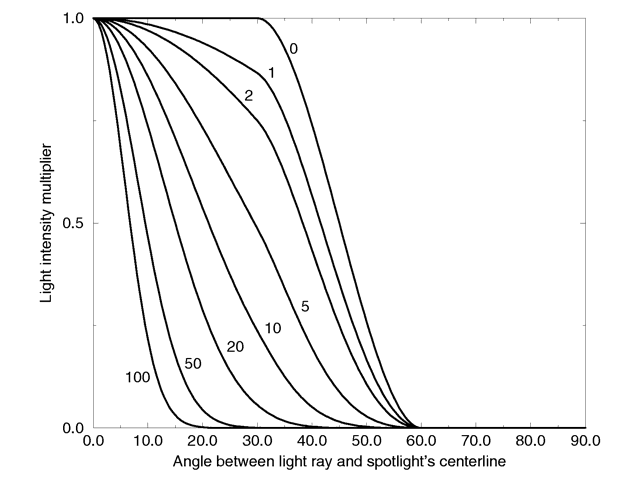 |
|
Intensity multiplier curve with fixed angle and falloff angles of 30 and 60 degrees respectively and different tightness values. |
You should note from the figures that the radius and falloff angles interact with the tightness parameter. To give the tightness value full control over the spotlight's appearance use radius 0 falloff 90. As you can see from the figure below. In that case the falloff angle has no effect and the lit area is only determined by the tightness parameter.
| 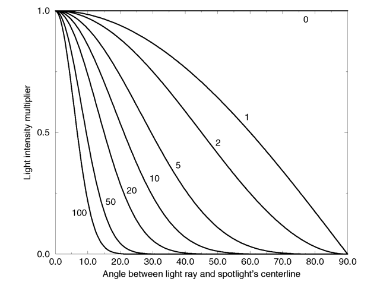 |
|
Intensity multiplier curve with a negative radius angle and different tightness values. |
Spotlights may be used any place that a normal light source is used. Like any light sources, they are invisible. They may also be used in conjunction with area lights.
3.4.3.1.3 Cylindrical Lights
The cylinder keyword specifies a cylindrical light source
that is great for simulating laser beams. Cylindrical light sources work
pretty much like spotlights except that the light rays are constrained by a
cylinder and not a cone. The syntax is:
CYLINDER_LIGHT_SOURCE:
light_source {
<Location>, COLOR cylinder
[LIGHT_MODIFIERS...]
}
LIGHT_MODIFIER:
SPOTLIGHT_ITEM | AREA_LIGHT_ITEMS | GENERAL_LIGHT_MODIFIERS
SPOTLIGHT_ITEM:
radius Radius | falloff Falloff | tightness Tightness |
point_at <Spot>
Default values:
radius: 0.75 degrees falloff: 1 degrees tightness: 0
The point_at, radius, falloff and
tightness keywords control the same features as with the
spotlight. See Spotlights for details.
You should keep in mind that the cylindrical light source is still a point light source. The rays are emitted from one point and are only constraint by a cylinder. The light rays are not parallel.
3.4.3.1.4 Parallel Lights
syntax:
light_source {
LOCATION_VECTOR, COLOR
[LIGHT_SOURCE_ITEMS...]
parallel
point_at VECTOR
}
The parallel keyword can be used with any type of light source.
Note: For normal point lights, point_at must come after
parallel.
Parallel lights are useful for simulating very distant light sources, such as sunlight. As the name suggests, it makes the light rays parallel.
Technically this is done by shooting rays from the closest point on a plane to the
object intersection point. The plane is determined by a perpendicular defined by the
light location and the point_at vector.
Two things must be considered when choosing the light location (specifically, its distance):
- Any parts of an object above the light plane still get illuminated according to the light direction, but they will not cast or receive shadows.
fade_distanceandfade_poweruse the lightlocationto determine distance for light attenuation, so the attenuation still looks like that of a point source.
Area light also uses the light location in its calculations.
3.4.3.1.5 Area Lights
Area light sources occupy a finite, one or two-dimensional area of space. They can cast soft shadows because an object can partially block their light. Point sources are either totally blocked or not blocked.
The area_light keyword in POV-Ray creates sources that are rectangular in shape, sort of like a flat panel light. Rather than performing the complex calculations that would be required to model a true area light, it is approximated as an array of point light sources spread out over the area occupied by the light. The array-effect applies to shadows only, however with the addition of the area_illumination keyword, full area light diffuse and specular illumination can be achieved. The object's illumination is still that of a point source. The intensity of each individual point light in the array is dimmed so that the total amount of light emitted by the light is equal to the light color specified in the declaration. The syntax is:
AREA_LIGHT_SOURCE:
light_source {
LOCATION_VECTOR, COLOR
area_light
AXIS_1_VECTOR, AXIS_2_VECTOR, Size_1, Size_2
[ adaptive Adaptive ] [ area_illumination on/off ]
[ jitter ] [ circular ] [ orient ]
[ [LIGHT_MODIFIERS...]
}
Any type of light source may be an area light.
The area_light keyword defines the location, the size and orientation of the area light as well as the number of lights in the light source array. The location vector is the centre of a rectangle defined by the two vectors <Axis_1> and <Axis_2>. These specify the lengths and directions of the edges of the light.
| 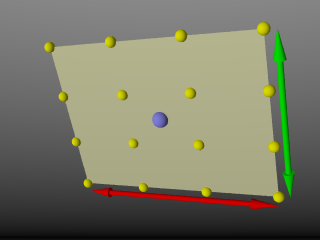 |
|
4x4 Area light, location and vectors. |
Since the area lights are rectangular in shape these vectors should be perpendicular to each other. The larger the size of the light the thicker the soft part of shadows will be. The integers Size_1 and Size_2 specify the number of rows and columns of point sources of the. The more lights you use the smoother the shadows, but render time will increase.
Note: It is possible to specify spotlight parameters along with the area light parameters to create area spotlights. Using area spotlights is a good way to speed up scenes that use area lights since you can confine the lengthy soft shadow calculations to only the parts of your scene that need them.
An interesting effect can be created using a linear light source. Rather than having a rectangular shape, a linear light stretches along a line sort of like a thin fluorescent tube. To create a linear light just create an area light with one of the array dimensions set to 1.
Note: In version 3.7 experimental support for full area light diffuse and specular illumination was added.
This feature is off by default, so area lights will work as previously expected, and can be turned on by specifying the area_illumination keyword, followed by the optional on/off keyword, in the light source definition. As with area lights, the Size_1 and Size_2 parameters determine the quality of the lighting, as well as the quality of the shadows.
The jitter keyword is optional. When used it causes the positions of the point lights in the array to be randomly jittered to eliminate any shadow banding that may occur. The jittering is completely random from render to render and should not be used when generating animations.
The adaptive keyword is used to enable adaptive sampling of the light source. By default POV-Ray calculates the amount of light that reaches a surface from an area light by shooting a test ray at every point light within the array. As you can imagine this is very slow. Adaptive sampling on the other hand attempts to approximate the same calculation by using a minimum number of test rays. The number specified after the keyword controls how much adaptive sampling is used. The higher the number the more accurate your shadows will be but the longer they will take to render. If you are not sure what value to use a good starting point is adaptive 1. The adaptive keyword only accepts integer values and cannot be set lower than 0.
When performing adaptive sampling POV-Ray starts by shooting a test ray at each of the four corners of the area light. If the amount of light received from all four corners is approximately the same then the area light is assumed to be either fully in view or fully blocked. The light intensity is then calculated as the average intensity of the light received from the four corners. However, if the light intensity from the four corners differs significantly then the area light is partially blocked. The area light is split into four quarters and each section is sampled as described above. This allows POV-Ray to rapidly approximate how much of the area light is in view without having to shoot a test ray at every light in the array. Visually the sampling goes like shown below.
| 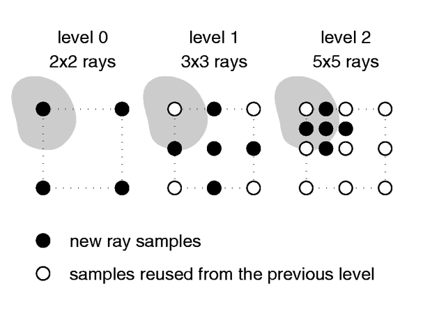 |
|
Area light adaptive samples. |
While the adaptive sampling method is fast (relatively speaking) it can sometimes produce inaccurate shadows. The solution is to reduce the amount of adaptive sampling without completely turning it off. The number after the adaptive keyword adjusts the number of times that the area light will be split before the adaptive phase begins. For example if you use adaptive 0 a minimum of 4 rays will be shot at the light. If you use adaptive 1 a minimum of 9 rays will be shot (adaptive
2 gives 25 rays, adaptive 3 gives 81 rays, etc). Obviously the more shadow rays you shoot the slower the rendering will be so you should use the lowest value that gives acceptable results.
The number of rays never exceeds the values you specify for rows and columns of points. For example area_light x,y,4,4 specifies a 4 by 4 array of lights. If you specify adaptive 3 it would mean that you should start with a 9 by 9 array. In this case no adaptive sampling is done. The 4 by 4 array is used.
The circular keyword has been added to area lights in order to better create circular soft shadows. With ordinary area lights the pseudo-lights are arranged in a rectangular grid and thus project partly rectangular shadows around all objects, including circular objects. By including the circular tag in an area light, the light is stretched and squashed so that it looks like a circle: this way, circular or spherical light sources are better simulated.
A few things to remember:
- Circular area lights can be ellipses: the AXIS_1_VECTOR and AXIS_2_VECTOR define the shape and orientation of the circle; if the vectors are not equal, the light source is elliptical in shape.
- Rectangular artefacts may still show up with very large area grids.
- There is no point in using
circularwith linear area lights or area lights which have a 2x2 size. - The area of a circular light is roughly 78.5 per cent of a similar size rectangular area light. Increase your axis vectors accordingly if you wish to keep the light source area constant.
The orient keyword has been added to area lights in order to better create soft shadows. Without this modifier, you have to take care when choosing the axis vectors of an area_light, since they define both its area and orientation. Area lights are two dimensional: shadows facing the area light receive light from a larger surface area than shadows at the sides of the area light.
| 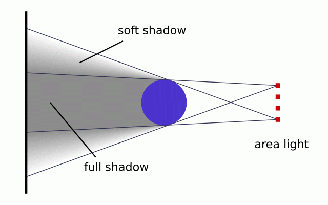 |
|
Area light facing object. |
Actually, the area from which light is emitted at the sides of the area light is reduced to a single line, only casting soft shadows in one direction.

|
|
Area light not facing object. |
Between these two extremes the surface area emitting light progresses gradually. By including the orient modifier in an area light, the light is rotated so that for every shadow test, it always faces the point being tested. The initial orientation is no longer important, so you only have to consider the desired dimensions (area) of the light source when specifying the axis vectors. In effect, this makes the area light source appear 3-dimensional (e.g. an area_light with perpendicular axis vectors of the same size and dimensions using circular and orient simulates a spherical light source).
Orient has a few restrictions:
- It can be used with circular lights only.
- The two axes of the area light must be of equal length.
- The two axes of the area light should use an equal number of samples, and that number should be greater than one
These three rules exist because without them, you can get unpredictable results from the orient feature.
If one of the first two rules is broken, POV-Ray will issue a warning and correct the problem. If the third rule is broken, you will only get the error message, and POV-Ray will not automatically correct the problem.
3.4.3.1.6 Shadowless Lights
Using the shadowless keyword you can stop a light source from
casting shadows. These lights are sometimes called fill lights.
They are another way to simulate ambient light however shadowless lights have
a definite source. The syntax is:
SHADOWLESS_LIGHT_SOURCE:
light_source {
<Location>, COLOR shadowless
[LIGHT_MODIFIERS...]
}
LIGHT_MODIFIER:
AREA_LIGHT_ITEMS | GENERAL_LIGHT_MODIFIERS
shadowless may be used with all types of light sources.
The only restriction is that shadowless should be before or
after all spotlight or cylinder option keywords. Do not mix or you get
the message Keyword 'the one following shadowless' cannot be used with
standard light source. Also note that shadowless lights will not cause
highlights on the illuminated objects.
3.4.3.1.7 Looks Like
By default a light source has no visible shape. The light simply radiates from an invisible point or area, however there are cases where this is not desired. Using looks_like is as an easy way to override this behavior. There is an implied no_shadow so that light is not blocked by the object, without it the light inside a non-transparent object could not escape. The object would, in effect, cast a shadow over everything.
When using looks_like there are a few important things to consider:
- the object should be positioned at the origin
- it's generally easier but not necessary to declare the object beforehand
- works with point and spot lights not parallel lights
- use a union instead if you want the object to block light and remember to make some portion of the object transparent
See the following examples:
#declare My_Lamp_Shape = sphere { <0, 0, 0>, Some_Radius }
// using looks_like
light_source {
<100, 200, -300> color White
looks_like { My_Lamp_Shape }
}
// using union
union {
light_source { <100, 200, -300> color White }
object { My_Lamp_Shape translate <100, 200, -300> }
}
3.4.3.1.8 Projected Through
You can use projected_through with any type of light source. Any object can be used, provided it has been declared beforehand. Projecting a light through an object can be thought of as the opposite of shadowing, in that only the light rays that hit the projected through object will contribute to the scene. This also works with area lights producing spots of light with soft edges. Any objects between the light and the projected through object will not cast shadows, additionally any surface within the projected through object will not cast shadows. Any textures or interiors on the object will be stripped and the object will not show up in the scene.
The syntax is as follows:
light_source {
LOCATION_VECTOR, COLOR
[LIGHT_SOURCE_ITEMS...]
projected_through { OBJECT }
}
3.4.3.1.9 Light Fading
By default POV-Ray does not diminish light from any light source as it
travels through space. In order to get a more realistic effect
fade_distance and fade_power keywords followed by float
values can be used to model the distance based falloff in light
intensity.
The fade_distance is used to specify the distance at which the full light intensity arrives, i.e.: the intensity which was given by the color attribute. The actual attenuation is described by the fade_power keyword, which determines the falloff rate. For example linear or quadratic falloff can be used by setting the fade_power to 1 or 2 respectively.
The complete formula to calculate the factor by which the light is attenuated is:
| 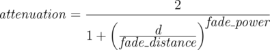 |
|
The attenuation of light fading formula |
Where d is the distance the light has traveled.
| 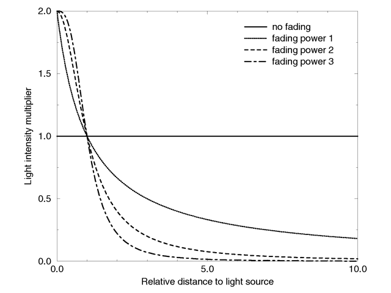 |
|
Light fading functions for different fading powers |
With any given value for fade_distance, either larger OR smaller than one, the light intensity at distances smaller than that given value actually increases. The internal calculation used to determine the attenuation factor is set up in a way so that one could set the fade distance and know that for any given fade distance, the light value would equal the set intensity. Lastly, only light coming directly from light sources is attenuated, and that reflected or refracted light is not attenuated by distance.
However, further investigation does reveal certain short comings with this method, as it doesn't follow a very good inverse-squared relationship over the fade distance and somewhat beyond. In other words, the function does break down to be very close to inverse squared as the distance from the given value for fade_distance gets significantly larger.
To that end consider the following:
A value for the light source intensity can be easily calculated when you take into account the distance from the light source to the scene center, or the object to be illuminated, and you set a relatively small value for fade_distance e.g.: the size of the light itself, relative to the scene dimensions.
The following example, that takes the reciprocal of the above formula that was used to calculate the factor by which the light is attenuated.
// setup the function
#declare Intensity_Factor = function (LD,FD,FP) {(1+pow(LD/FD,FP))/2};
// the translated position of the light source
#declare Light_Position = <0,0,-2400>;
// determine the light distance
#declare Light_Distance = vlength(Light_Position-<0,0,0>);
// scaled size of the light source
#declare Fade_Distance = 4.5;
// linear (1) or quadratic (2) falloff
#declare Fade_Power = 2;
Note: The above example calculates Light_Distance to the scene center, but you could have just as easily used the location of an object.
Now all you have to do is setup the light source. The #debug statements make it easy to see whats going on while tuning the light source.
#debug concat ("\nFade Distance: ", str(Fade_Distance,2,4))
#debug concat ("\nLight Distance: ", str(Light_Distance,5,4)," \n")
#debug concat ("Intensity Factor: ", str(Intensity_Factor (Light_Distance, Fade_Distance, Fade_Power),6,4)
#debug concat ("\n\n")
light_source {
0, rgb <0.9,0.9,1> * Intensity_Factor (Light_Distance, Fade_Distance, Fade_Power)
fade_distance Fade_Distance
fade_power Fade_Power
translate Light_Position
}
At first glance this may seem counter-intuitive but it works out well given the small value used for Fade_Distance. You should be aware that this method is meant to give a light strength value of ONE at the point of interest ONLY. In other words, the point represented by the calculated value Light_Distance in the above example. Naturally objects closer to the light source will get a stronger illumination, while objects further away will receive less.
Note: For maximum realism, use fade_power 2 and set fade_distance to the approximate radius of the object supposedly giving off the light, e.g. the radius of a frosted incandescent light bulb, half the length of the tungsten filament in a clear incandescent light bulb, etc.; if this makes the light seem too dim, compensate by boosting the light source brightness. There is nothing wrong with a light source having a color of rgb <10000,8000,2000> if that's what it takes.
New in POV-Ray 3.8 is an alternative mode for distance-based light fading, in which the light intensity follows an inverse power law at all distances. To activate this mode, specify fade_distance 0. Nominal light intensity is then achieved at unit distance. For backward compatibility, this mode requires #version 3.8 or higher to be set.
3.4.3.1.10 Atmospheric Media Interaction
By default light sources will interact with an atmosphere added to the
scene. This behavior can be switched off by using media_interaction off
inside the light source statement.
Note: In POV-Ray 3.0 this feature was turned off
and on with the atmosphere keyword.
3.4.3.1.11 Atmospheric Attenuation
Normally light coming from light sources is not influenced by fog or
atmospheric media. This can be changed by turning the media_attenuation on
for a given light source on. All light coming from this light source will now
be diminished as it travels through the fog or media. This results in an
distance-based, exponential intensity falloff ruled by the used fog or media.
If there is no fog or media no change will be seen.
Note: In POV-Ray 3.0 this
feature was turned off and on with the atmospheric_attenuation keyword.
3.4.3.2 Light Group
Light groups make it possible to create a union of light sources and objects, where the objects in the group are illuminated by the lights in the group or, if so desired, by the global light sources as well. The light sources in the group can only illuminate the objects that are in the group, this also applies to scattering media, and it must be included in the light group as well. Keep in mind that if the scattering media also has an absorption component, it will be affected by light sources that are not in the light group definition.
Light groups are for example useful when creating scenes in which some objects turn out to be too dark but the average light is exactly how it should be, as the light sources in the group do not contribute to the global lighting.
Syntax :
light_group {
LIGHT_GROUP LIGHT |
LIGHT_GROUP OBJECT |
LIGHT_GROUP
[LIGHT_GROUP MODIFIER]
}
LIGHT_GROUP LIGHT:
light_source | light_source IDENTIFIER
LIGHT_GROUP OBJECT:
OBJECT | OBJECT IDENTIFIER
LIGHT_GROUP MODIFIER:
global_lights BOOL | TRANSFORMATION
- To illuminate objects in the group with the light from global light sources, add
global_lights onto the light group definition. - Light groups may be nested. In this case light groups inherit the light sources of the light group in which they are contained.
- Light groups can be seen as a
unionof an object with alight_sourceand can be used with CSG.
Some examples of a simple light group:
#declare RedLight =
light_source {
<-500,500,-500>
rgb <1,0,0>
}
light_group {
light_source {RedLight}
sphere {0,1 pigment {rgb 1}}
global_lights off
}
A nested light group:
#declare L1 =
light_group {
light_source {<10,10,0>, rgb <1,0,0>}
light_source {<0,0,-100>, rgb <0,0,1>}
sphere {0,1 pigment {rgb 1}}
}
light_group {
light_source {<0,100,0>, rgb 0.5}
light_group {L1}
}
Light groups with CSG:
difference {
light_group {
sphere {0,1 pigment {rgb 1}}
light_source {<-100,0,-100> rgb <1,0,0>}
global_lights off
}
light_group {
sphere {<0,1,0>,1 pigment {rgb 1}}
light_source {<100,100,0> rgb <0,0,1>}
global_lights off
}
rotate <-45,0,0>
}
In the last example the result will be a sphere illuminated red, where the part that is differenced away is illuminated blue. The end result is comparable to the difference between two spheres with a different pigment.
3.4.3.3 Radiosity
3.4.3.3.1 Radiosity Basics
Radiosity is an extra calculation that more realistically computes the diffuse inter-reflection of light. This diffuse inter-reflection can be seen if you place a white chair in a room full of blue carpet, blue walls and blue curtains. The chair will pick up a blue tint from light reflecting off of other parts of the room. Also notice that the shadowed areas of your surroundings are not totally dark even if no light source shines directly on the surface. Diffuse light reflecting off of other objects fills in the shadows. Typically ray-tracing uses a trick called ambient light to simulate such effects but it is not very accurate.
Radiosity calculations are only made when a radiosity{} block is used inside the global_settings{} block.
The following sections describes how radiosity works, how to control it with various global settings and tips on trading quality vs. speed.
3.4.3.3.2 How Radiosity Works
The problem of ray-tracing is to figure out what the light level is at each point that you can see in a scene. Traditionally, in ray tracing, this is broken into the sum of these components:
- Diffuse
- the effect that makes the side of things facing the light brighter;
- Specular
- the effect that makes shiny things have dings or sparkles on them;
- Reflection
- the effect that mirrors give; and
- Ambient
- the general all-over light level that any scene has, which keeps things in shadow from being pure black.
POV-Ray's radiosity system, based on a method by Greg Ward, provides a way to replace the last term - the constant ambient light value - with a light level which is based on what surfaces are nearby and how bright in turn they are.
The first thing you might notice about this definition is that it is circular: the brightness and color of everything is dependent on everything else and vice versa. This is true in real life but in the world of ray-tracing, we can make an approximation. The approximation that is used is: the objects you are looking at have their ambient values calculated for you by
checking the other objects nearby. When those objects are checked during this process, however, their diffuse term is used. The brightness of radiosity in POV-Ray is based on two things:
- the amount of light gathered
- the diffuse property of the surface finish
Note: The following is an important behavior change!
Previously an object could have both radiosity and an ambient term. This is no longer the case, as when radiosity is used an objects ambient term is effectively set to zero. See the emission keyword that has been added to the finish block if the intent is to model a glowing object.
How does POV-Ray calculate the ambient term for each point? By sending out more rays, in many different directions, and averaging the results. A typical point might use 200 or more rays to calculate its ambient light level correctly.
Now this sounds like it would make the ray-tracer 200 times slower. This is true, except that the software takes advantage of the fact that ambient light levels change quite slowly (remember, shadows are calculated separately, so sharp shadow edges are not a problem). Therefore, these extra rays are sent out only once in a while (about 1 time in 50), then these calculated values are saved and reused for nearby pixels in the image when possible.
This process of saving and reusing values is what causes the need for a variety of tuning parameters, so you can get the scene to look just the way you want.
3.4.3.3.3 Adjusting Radiosity
As described earlier, radiosity is turned on by using the radiosity{} block in global_setting.
Radiosity has many parameters that are specified as follows:
global_settings { radiosity { [RADIOSITY_ITEMS...] } }
RADIOSITY_ITEMS:
adc_bailout Float | always_sample Bool | brightness Float |
count Integer [,Integer] | error_bound Float | gray_threshold Float |
low_error_factor Float | max_sample Float | media Bool |
maximum_reuse Float | minimum_reuse Float | nearest_count Integer [,Integer] |
normal Bool | pretrace_start Float |
pretrace_end Float | recursion_limit Integer | subsurface Bool
Each item is optional and may appear in any order. If an item is specified more than once the last setting overrides previous values. Details on each item is given in the following sections.
Note: Considerable changes have been made to the way radiosity works in POV-Ray 3.7
compared to previous versions. Old scenes will not render with exactly the same results. It is not possible to use the #version directive to get backward compatibility for radiosity.
3.4.3.3.3.1 adc_bailout
You can specify an adc_bailout for radiosity rays. Usually the default of 0.01 will give good results, but for scenes with bright emissive objects it should be set to adc_bailout = 0.01 / brightest_emissive_object.
3.4.3.3.3.2 always_sample
Since always_sample off is the default, POV-Ray will only use the data from the pretrace step and not gather any new samples during the final radiosity pass. This produces higher quality results, and quicker renders. It may also reduce the splotchy appearance of the radiosity samples, and can be very useful when reusing previously saved radiosity data. If you find the need to override the behavior, you can do so by specifying always_sample on.
3.4.3.3.3.3 brightness
The brightness keyword specifies a float value that is the degree to which objects are brightened before being returned upwards to the rest of the system. Ideally brightness should be set to the default value of 1.0. If the overall brightness doesn't seem to fit, the diffuse color of objects and/or the overall brightness of light sources (including emission > 0 objects) should be adjusted.
As an example, a typical problem encountered in radiosity scenes is, when setting pigment {rgb 1} and diffuse 1.0, then tweaking the light source(s) and ambient_light setting to make the image look right. It just doesn't work properly in radiosity scenes, as it will give too strong inter-reflections. While you can compensate for this by reducing radiosity brightness, it's generally discouraged. In this case the surface properties should be fixed (e.g. diffuse set to something around 0.7, which is much more realistic).
An exception, calling for the adjustment of radiosity brightness, would be to compensate for a low recursion_limit setting (e.g recursion_limit 1). In such a case, increasing brightness will help maintain a realistic overall brightness.
3.4.3.3.3.4 count
The integer number of rays that are sent out whenever a new radiosity value has to be calculated is given by count. The default value is 35, if the value exceeds 1600, POV-Ray will use a Halton sequence instead of the default built-in sequence. When this value is too low, the light level will tend to look a little bit blotchy, as if the surfaces you are looking at were slightly warped. If this is not important to your scene (as in the case that you have a bump map or if you have a strong texture) then by all means use a lower number.
By default, POV-Ray uses the same set of directions for each new radiosity value to calculate. In order to cover more directions in total without increasing the number of rays to trace, count accepts an optional second parameter which specifies the total number of directions from which to choose. POV-Ray will then draw directions from this pool in a round-robin fashion.
3.4.3.3.3.5 error_bound
The error_bound float value is one of the two main speed/quality tuning values (the other is of course the number of rays shot). In an ideal world, this would be the only value needed. It is intended to mean the fraction of error tolerated. For example, if it were set to 1 the algorithm would not calculate a new value until the error on the last one was estimated at as high as 100%. Ignoring the error introduced by rotation for the moment, on flat surfaces this is equal to the fraction of the reuse distance, which in turn is the distance to the closest item hit. If you have an old sample on the floor 10 inches from a wall, an error bound of 0.5 will get you a new sample at a distance of about 5 inches from the wall.
The default value of 1.8 is good for a smooth general lighting effect. Using lower values is more accurate, but it will strongly increase the danger of artifacts and therefore require higher count. You can use values even lower than 0.1 but both render time and memory use can become extremely high.
3.4.3.3.3.6 gray_threshold
Diffusely inter-reflected light is a function of the objects around the point in question. Since this is recursively defined to millions of levels of recursion, in any real life scene, every point is illuminated at least in part by every other part of the scene. Since we cannot afford to compute this, if we only do one bounce, the calculated ambient light is very strongly affected by the colors of the objects near it. This is known as color bleed and it really happens but not as much as this calculation method would have you believe. The gray_threshold float value grays it down a little, to make your scene more believable. A value of .6 means to calculate the ambient value as 60% of the equivalent gray value calculated, plus 40% of the actual value calculated. At 0%, this feature does nothing. At 100%, you always get white/gray ambient light, with no hue.
Note: This does not change the lightness/darkness, only the strength of hue/grayness (in HLS terms, it changes S only). The default value is 0.0
3.4.3.3.3.7 low_error_factor
If you calculate just enough samples, but no more, you will get an image which has slightly blotchy lighting. What you want is just a few extra interspersed, so that the blending will be nice and smooth. The solution to this is the mosaic preview, controlled by
pretrace, it goes over the image one or more times beforehand, calculating radiosity values. To ensure that you get a few extra, the radiosity algorithm lowers the error bound during the pre-final passes, then sets it back just before the final pass. The low_error_factor is a float tuning value which sets the amount that the error bound is dropped during the preliminary image passes. If your low error factor is 0.8 and your error bound is set to 0.4 it will really use an error bound of 0.32 during the first passes and 0.4 on the final pass. The default value is 0.5.
3.4.3.3.3.8 max_sample
Sometimes there can be splotchy patches that are caused by objects that are very bright. This can be sometimes avoided by using the max_sample keyword. max_sample takes a float parameter which specifies the brightest that any gathered sample is allowed to be. Any samples brighter than this will have their brightness decreased (without affecting color). Note however that this mechanism will somewhat darken the overall brightness in an unrealistic way. Specifying a non-positive value for max_sample will allow any brightness of samples (which is the default).
3.4.3.3.3.9 maximum_reuse
The maximum_reuse parameter works in conjunction with, and is similar to that of minimum_reuse, the only difference being that it is an upper bound rather than a lower one. The default value is 0.200.
Note: If you choose to adjust either the minimum_reuse or maximum_reuse settings they are subject to the criteria listed below:
- If
minimum_reuse > maximum_reuse/2with only one value is specified, a warning is issued and the unspecified value is adjusted. - If
minimum_reuse > maximum_reuse/2with both values specified, a warning is issued and neither value is modified. - If
minimum_reuse >= maximum_reuse, an error is generated.
3.4.3.3.3.10 minimum_reuse
The minimum effective radius ratio is set by minimum_reuse float value. This is the fraction of the screen width which sets the minimum radius of reuse for each sample point (actually, it is the fraction of the distance from the eye but the two are roughly equal for normal camera angles). For example, if the value is 0.02, the radius of maximum reuse for every sample is set to whatever ground distance corresponds to 2% of the width of the screen. Imagine you sent a ray off to the horizon and it hits the ground at a distance of 100 miles from your eye point. The reuse distance for that sample will be set to 2 miles. At a resolution of 300*400 this will correspond to (very roughly) 8 pixels. The theory is that you do not want to calculate values for every pixel into every crevice everywhere in the scene, it will take too long. This sets a minimum bound for the reuse. If this value is too low, (which it should be in theory) rendering gets slow, and inside corners can get a little grainy. If it is set too high, you do not get the natural darkening of illumination near inside edges, since it reuses. At values higher than 2% you start getting more just plain errors, like reusing the illumination of the open table underneath the apple. Remember that this is a unit less ratio. The default value is 0.015.
3.4.3.3.3.11 nearest_count
The nearest_count integer value is the minimum number of old radiosity values blended together to create a new interpolated value. There is no upper limit on the number of samples blended, all available samples are blended that match the error_bound and maximum_reuse settings. When an optional second parameter (adaptive radiosity pretrace) is specified after the nearest_count keyword, pretrace will stop re-iterating over areas where, on average, that many average-quality samples are already present per ray. (The actual number of samples required to satisfy the nearest_count settings is influenced by sample quality, with high-quality samples reducing the effective number of samples required, down to 1/4 of the parameter value in extreme cases, and low-quality samples increasing the number.) With a setting lower than 4, things can get pretty patchy, this can be useful for debugging. Conversely, the nearest_count upper limit setting is 20, since values greater than 20 are not very useful in practice, and that is currently the size of the array allocated. The default value is 5.
3.4.3.3.3.12 pretrace_start and pretrace_end
To control the radiosity pre-trace gathering step, use the keywords pretrace_start and pretrace_end. Each of these is followed by a decimal value between 0.0 and 1.0 which specifies the size of the blocks in the mosaic preview as a percentage of the image size. The defaults are 0.08 for pretrace_start and 0.04 for pretrace_end.
3.4.3.3.3.13 recursion_limit
The recursion_limit is an integer value which determines how many recursion levels are used to calculate the diffuse inter-reflection. The default value is 2, the upper limit is 20. In practice, values greater than 3 are seldom useful.
3.4.3.3.4 Configuring Radiosity
The following parameters deal with configuring radiosity and how it interacts with other features. See also these additional command line options for more control.
3.4.3.3.4.1 Importance
If you have some comparatively small yet bright objects in your scene, radiosity will tend to produce bright splotchy artifacts unless you use a pretty high number of rays, which in turn will tremendously increase rendering time. To somewhat mitigate this issue, full ray computations are performed only for a certain portion of sample rays, depending on the ''importance'' of the first object each ray encounters. Importance can be assigned on a per-object basis using the following syntax:
sphere { ... radiosity { importance IMPORTANCE } }
Where IMPORTANCE is a value in the range of greater than 0.0 to less than or equal to 1.0 specifying the percentage of rays to actually compute on average. A particular ray will only be fully computed if it is within the first COUNT*IMPORTANCE rays of the sampling sequence; due to the low-discrepancy sub-random nature of the sequence, this is mostly equivalent to a per-ray weighted random choice, while maintaining a low-discrepancy uniform distribution on a per-object basis. Rays actually computed are weighted to compensate for those not computed.
Objects derived from previously defined objects will default to the inherited importance. CSG components without an explicit importance value set will default to their parent object's importance. Other objects will normally default to importance 1.0, however this can be changed in a default{} block:
default { radiosity { importance DEFAULT_IMPORTANCE } }
3.4.3.3.4.2 Media and Radiosity
Radiosity estimation can be affected by media. To enable this feature, add media on to the radiosity{} block. The default is off
3.4.3.3.4.3 No Radiosity
Specifying no_radiosity in an object block makes that object invisible to radiosity rays, in the same way as no_image, no_reflection and no_shadow make an object invisible to primary, reflected and shadow test rays, respectively.
3.4.3.3.4.4 Normal and Radiosity
Radiosity estimation can be affected by normals. To enable this feature, add normal on to the radiosity{} block. The default is off
3.4.3.3.4.5 Save and Load Radiosity Data
In general, it is not a good idea to save and load radiosity data if scene objects are moving. Even after the data is loaded, more samples may be taken during the final rendering phase, particularly if you've specified always_sample on.
Note: The method to load and save radiosity data has been changed to a command line option. See section radiosity load and save for more details.
3.4.3.3.4.6 Subsurface and Radiosity
To specify whether radiosity sampling should honor subsurface light transport, you should place the following in the global settings radiosity block:
global_settings {
radiosity { subsurface BOOL }
}
If this setting is off, the default, radiosity based diffuse illumination is computed as if the surrounding objects had subsurface light transport turned off. Setting this to on may improve realism especially in the presence of materials with high translucency, but at some cost in rendering time.
See the section Subsurface Light Transport for more information about the role of subsurface in the global settings block.
3.4.3.3.5 Tips on Radiosity
Have a look at the Radiosity Tutorial to get a feel for what the visual result of changing radiosity parameters is.
If you want to see where your values are being calculated set radiosity count down to about 20, set radiosity nearest_count to 1 and set gray_threshold to 0. This will make everything maximally patchy, so you will be able to see the borders between patches. There will have been a radiosity calculation at the center of most patches. As a bonus, this is quick to run. You can then change the error_bound up and down to see how it changes things. Likewise
modify minimum_reuse.
One way to get extra smooth results: crank up the sample count (we have gone as high as 1300) and drop the low_error_factor to something small like 0.6. Bump up the nearest_count to 7 or 8. This will get better values, and more of them, then interpolate among more of them on the last pass. This is not for people with a lack of patience since it is like a squared function. If your blotchiness is only in certain corners or near certain objects try tuning the error bound instead. Never drop it by more than a little at a time, since the run time will get very long.
Sometimes extra samples are taken during the final rendering pass, if you've specified always_sample on. These newer samples can cause discontinuities in the radiosity in some scenes. To decrease these artifacts, use a pretrace_end of 0.04 (or even 0.02 if you are really patient and picky). This will cause the majority of the samples to be taken during the preview passes, and decrease the artifacts created during the final rendering pass. Be sure to force POV-Ray to only use the data from the pretrace step and not gather any new samples during the final radiosity pass, by removing always_sample on from within the global_settings radiosity block.
If your scene uses ambient objects (especially small ambient objects) as light sources, you should probably use a higher count (100-150 and higher). For such scenes, an error_bound of 1.0 is usually good. A higher value causes too much error, but lower causes very slow rendering. It is important to adjust adc_bailout.
3.4.3.4 Photons
With photons it is possible to render true reflective and refractive caustics. The photon map was first introduced by Henrik Wann Jensen (see Suggested Reading).
Photon mapping is a technique which uses a forward ray-tracing pre-processing step to render refractive and reflective caustics realistically. This means that mirrors can reflect light rays and lenses can focus light.
Photon mapping works by shooting packets of light (photons) from light sources into the scene. The photons are directed towards specific objects. When a photon hits an object after passing through (or bouncing off of) the target object, the ray intersection is stored in memory. This data is later used to estimate the amount of light contributed by reflective and refractive caustics.
3.4.3.4.1 Examples
|
This image shows refractive caustics from a sphere and a cylinder. Both use an index of refraction of |
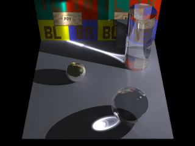 |
|
Reflective caustics |
| 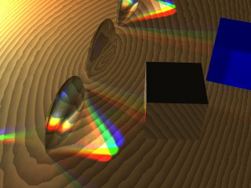 |
Here we have three lenses and three light sources. The middle lens has photon mapping turned off. You can also see some reflective caustics from the brass box (some light reflects and hits the blue box, other light bounces through the nearest lens and is focused in the lower left corner of the image). |
|
Photons used for lenses and caustics |
3.4.3.4.2 Using Photon Mapping in Your Scene
When designing a scene with photons, it helps to think of the scene objects in two categories. Objects in the first category will show photon caustics when hit by photons. Objects in the second category cause photon caustics by reflecting or refracting photons. Some objects may be in both categories, and some objects may be in neither category.
Category 1 - Objects that show photon caustics
By default, all objects are in the first category. Whenever a photon hits
an object, the photon is stored and will later be used to render caustics on
that object. This means that, by default, caustics from photons can appear
on any surface. To speed up rendering, you can take objects out of this
category. You do this with the line: photons{collect off}. If you use
this syntax, caustics from photons will not appear on the object. This will
save both memory and computational time during rendering.
Category 2 - Objects that cause photon caustics
By default, there are no objects in the second category. If you want your
object to cause caustics, you need to do two things. First, make your object into
a "target." You do this with the target keyword. This enables light
sources to shoot photons at your object. Second, you need to specify if
your object reflects photons, refracts photons, or both. This is done with
the reflection on and refraction on keywords. To allow an object to
reflect and refract photons, you would use the following lines of code
inside the object:
photons{
target
reflection on
refraction on
}
Generally speaking, you do not want an object to be in both categories. Most objects that cause photon caustics do not themselves have much color or brightness. Usually they simply refract or reflect their surroundings. For this reason, it is usually a waste of time to display photon caustics on such surfaces. Even if computed, the effects from the caustics would be so dim that they would go unnoticed.
Sometimes, you may also wish to add photons{collect off} to other clear or
reflective objects, even if they are not photon targets. Again, this is
done to prevent unnecessary computation of caustic lighting.
Finally, you may wish to enable photon reflection and refraction for a surface, even if it is not a target. This allows indirect photons (photons that have already hit a target and been reflected or refracted) to continue their journey after hitting this object.
3.4.3.4.3 Photon Global Settings
global_photon_block:
photons {
spacing <photon_spacing> | count <photons_to_shoot>
[gather <min_gather>, <max_gather>]
[media <max_steps> [,<factor>]]
[jitter <jitter_amount>]
[max_trace_level <photon_trace_level>]
[adc_bailout <photon_adc_bailout>]
[save_file "filename" | load_file "filename"]
[autostop <autostop_fraction>]
[expand_thresholds <percent_increase>, <expand_min>]
[radius <gather_radius>, <multiplier>, <gather_radius_media>,<multiplier>]
}
All photons default values:
Global : expand_min : 40 gather : 20, 100 jitter : 0.4 media : 0 Object : collect : on refraction : off reflection : off split_union : on target : 1.0 Light_source: area_light : off refraction : off reflection : off
To specify photon gathering and storage options you need to add a photons
block to the global_settings section of your scene.
For example:
global_settings {
photons {
count 20000
autostop 0
jitter .4
}
}
The number of photons generated can be set using either the spacing or count keywords:
- If spacing is used, it specifies approximately the average distance between photons on surfaces. If you cut the spacing in half, you will get four times as many surface photons, and eight times as many media photons.
- If count is used, POV-Ray will shoot the approximately number of photons
specified. The actual number of photons that result from this will almost
always be at least slightly different from the number specified. Still, if you
double the photons_to_shoot value, then twice as many photons will be shot. If
you cut the value in half, then half the number of photons will be shot.
- It may be less, because POV shoots photons at a target object's bounding box, which means that some photons will miss the target object.
- On the other hand, may be more, because each time one object hits an object that has both reflection and refraction, two photons are created (one for reflection and one for refraction).
- POV will attempt to compensate for these two factors, but it can only estimate how many photons will actually be generated. Sometimes this estimation is rather poor, but the feature is still usable.
The keyword gather allows you to specify how many photons are
gathered at each point during the regular rendering step. The first number
(default 20) is the minimum number to gather, while the second number (default
100) is the maximum number to gather. These are good values and you should only
use different ones if you know what you are doing.
The keyword media turns on media photons. The parameter
max_steps specifies the maximum number of photons to deposit
over an interval. The optional parameter factor specifies the difference in
media spacing compared to surface spacing. You can increase factor and
decrease max_steps if too many photons are being deposited in media.
The keyword jitter specifies the amount of jitter used in the
sampling of light rays in the pre-processing step. The default value is good and
usually does not need to be changed.
The keywords max_trace_level and adc_bailout allow
you to specify these attributes for the photon-tracing step. If you do not
specify these, the values for the primary ray-tracing step will be used.
The keywords save_file and load_file allow you to
save and load photon maps. If you load a photon map, no photons will be shot.
The photon map file contains all surface (caustic) and media
photons.
radius is used for gathering photons. The larger the radius, the longer it
takes to gather photons. But if you use too small of a radius, you might
not get enough photons to get a good estimate. Therefore, choosing a good
radius is important. Normally POV-Ray looks through the photon map and uses some ad-hoc statistical analysis to determine a reasonable radius. Sometimes it does a good job, sometimes it does not. The radius keyword lets you override or adjust POV-Ray's guess.
radius parameters (all are optional):
- Manually set the gather radius for surface photons. If this is either zero or if you leave it out, POV-Ray will analyze and guess.
- Adjust the radius for surface photons by setting a multiplier. If POV-Ray, for example, is picking a radius that you think is too big (render is too slow), you can use
radius ,0.5to lower the radius (multiply by 0.5) and speed up the render at the cost of quality. - Manually set the gather radius for media photons.
- Adjust the radius for media photons by setting a multiplier.
The keywords autostop
and expand_thresholds will be explained later.
3.4.3.4.4 Shooting Photons at an Object
object_photon_block:
photons {
[target [Float]]
[refraction on|off]
[reflection on|off]
[collect on|off]
[pass_through]
}
To shoot photons at an object, you need to tell POV that the object receives
photons. To do this, create a photons { } block within the object. For example:
object {
MyObject
photons {
target
refraction on
reflection on
collect off
}
}
In this example, the object both reflects and refracts photons. Either of these options could be turned off (by specifying reflection off, for example). By using this, you can have an object with a reflective finish which does not reflect photons for speed and memory reasons.
The keyword target makes this object a target.
The density of the photons can be adjusted by specifying a spacing multiplier in the form of an optional value after the target keyword. If, for example, you specify a spacing multiplier of 0.5, then the spacing for photons hitting this object will be 1/2 of the distance of the spacing for other objects.
Note: This means four times as many surface photons, and eight times as many media photons.
The keyword collect off causes the object to ignore photons.
Photons are neither deposited nor gathered on that object.
The keyword pass_through causes photons to pass through the
object unaffected on their way to a target object. Once a
photon hits the target object, it will ignore the pass_through
flag. This is basically a photon version of the no_shadow
keyword, with the exception that media within the object will still be
affected by the photons (unless that media specifies collect off). If you
use the no_shadow keyword, the object will be tagged as
pass_through automatically. You can then turn off
pass_through if necessary by simply using photons {
pass_through off }.
Note: Photons will not be shot at an object unless you
specify the target keyword. Simply turning refraction on will not
suffice.
When shooting photons at a CSG-union, it may sometimes be of advantage to use
split_union off inside the union.
POV-Ray will be forced to shoot at the whole object, instead of splitting it up
and shooting photons at its compound parts.
3.4.3.4.5 Photons and Light Sources
light_photon_block:
photons {
[refraction on | off]
[reflection on | off]
[area_light]
}
Example:
light_source {
MyLight
photons {
refraction on
reflection on
}
}
Sometimes, you want photons to be shot from one light source and not another. In that case, you can turn photons on for an object, but specify photons {reflection off refraction off } in the light source's definition. You can also turn off only reflection or only refraction for any light source.
Note: The photon shooting performance has been improved with the addition of multiple-thread support. To take advantage of this at the moment, your scene will need multiple light sources.
3.4.3.4.6 Photons and Media
global_settings {
photons {
count 10000
media 100
}
}
Photons also interact fully with media. This means that volumetric photons are stored in scattering media. This is enabled by using the keyword media within the photons block.
To store photons in media, POV deposits photons as it steps through the media during the photon-tracing phase of the render. It will deposit these photons as it traces caustic photons, so the number of media photons is dependent on the number of caustic photons. As a light ray passes through a section of media, the photons are deposited, separated by approximately the same distance that separates surface photons.
You can specify a factor as a second optional parameter to the media keyword. If, for example, factor is set to 2.0, then photons will be spaced twice as far apart as they would otherwise have been spaced.
Sometimes, however, if a section of media is very large, using these settings could create a large number of photons very fast and overload memory. Therefore, following the media keyword, you must specify the maximum number of photons that are deposited for each ray that travels through each section of media. A setting of 100 should probably work in most cases.
You can put collect off into media to make that media ignore
photons. Photons will neither be deposited nor gathered in a media that is
ignoring them. Photons will also not be gathered nor deposited in non-scattering
media. However, if multiple medias exist in the same space, and at least
one does not ignore photons and is scattering, then photons will be deposited in
that interval and will be gathered for use with all media in that interval.
3.4.3.4.7 Photons FAQ
I made an object with IOR 1.0 and the shadows look weird.
If the borders of your shadows look odd when using photon mapping, do not be alarmed. This is an unfortunate side-effect of the method. If you increase the density of photons (by decreasing spacing and gather radius) you will notice the problem diminish. We suggest not using photons if your object does not cause much refraction (such as with a window pane or other flat piece of glass or any objects with an IOR very close to 1.0).
My scene takes forever to render.
When POV-Ray builds the photon maps, it continually displays in the status bar the number of photons that have been shot. Is POV-Ray stuck in this step and does it keep shooting lots and lots of photons?
yes
If you are shooting photons at an infinite object (like a plane), then you should expect this. Either be patient or do not shoot photons at infinite objects.
Are you shooting photons at a CSG difference? Sometimes POV-Ray does a bad
job creating bounding boxes for these objects. And since photons are shot at the
bounding box, you could get bad results. Try manually bounding the object. You
can also try the autostop feature (try autostop 0). See the docs
for more info on autostop.
no
Does your scene have lots of glass (or other clear objects)? Glass is slow and you need to be patient.
My scene has polka dots but renders really quickly. Why?
You should increase the number of photons (or decrease the spacing).
The photons in my scene show up only as small, bright dots. How can I fix this?
The automatic calculation of the gather radius is probably not working correctly, most likely because there are many photons not visible in your scene which are affecting the statistical analysis.
You can fix this by either reducing the number of photons that are in your scene but not visible to the camera (which confuse the auto-computation), or by specifying the initial gather radius manually by using the keyword radius. If you must manually specify a gather radius, it is usually best to also use spacing instead of count, and then set radius and spacing to a 5:1 (radius:spacing) ratio.
Adding photons slowed down my scene a lot, and I see polka dots.
This is usually caused by having both high- and low-density photons in the same scene. The low density ones cause polka dots, while the high density ones slow down the scene. It is usually best if the all photons are on the same order of magnitude for spacing and brightness. Be careful if you are shooting photons objects close to and far from a light source. There is an optional parameter to the target keyword which allows you to adjust the spacing of photons at the target object. You may need to adjust this factor for objects very close to or surrounding the light source.
I added photons, but I do not see any caustics.
When POV-Ray builds the photon maps, it continually displays in the status bar the number of photons that have been shot. Did it show any photons being shot?
no
Try avoiding autostop, or you might want to bound your object
manually.
Try increasing the number of photons (or decreasing the spacing).
yes
Were any photons stored (the number after total in the
rendering message as POV-Ray shoots photons)?
no
It is possible that the photons are not hitting the target object (because another object is between the light source and the other object).
yes
The photons may be diverging more than you expect. They are probably there, but you cannot see them since they are spread out too much
The base of my glass object is really bright.
Use collect off with that object.
Will area lights work with photon mapping?
Photons do work with area lights. However, normally photon mapping ignores
all area light options and treats all light sources as point lights. If you
would like photon mapping to use your area light options, you must specify the
"area_light" keyword within the photons {
} block in your light source's code. Doing this will not increase the
number of photons shot by the light source, but it might cause regular patterns
to show up in the rendered caustics (possibly splotchy).
What do the stats mean?
In the stats, photons shot means how many light rays were shot
from the light sources. photons stored means how many photons are
deposited on surfaces in the scene. If you turn on reflection and refraction,
you could get more photons stored than photons shot, since the each ray can get
split into two.
3.4.3.4.8 Photon Tips
- Use
collect offin objects that photons do not hit. Just putphotons { collect off }in the object's definition. - Use
collect offin glass objects. - Use
autostopunless it causes problems. - A big tip is to make sure that all of the final densities of photons are of the same general magnitude. You do not want spots with really high density photons and another area with really low density photons. You will always have some variation (which is a good thing), but having really big differences in photon density is what causes some scenes to take many hours to render.
3.4.3.4.9 Advanced Techniques
3.4.3.4.9.1 Autostop
|
To understand the |
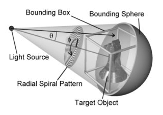 |
|
Example of the photon autostop option |
Normally, POV does not stop shooting photons until the target object's
entire bounding box has been thoroughly covered. Sometimes, however, an object
is much smaller than its bounding box. At these times, we want to stop shooting
if we do a complete circle in the spiral without hitting the object.
Unfortunately, some objects (such as copper rings), have holes in the middle.
Since we start shooting at the middle of the object, the photons just go through
the hole in the middle, thus fooling the system into thinking that
it is done. To avoid this, the autostop keyword lets you specify
how far the system must go before this auto-stopping feature kicks in. The value
specified is a fraction of the object's bounding box. Valid values are 0.0
through 1.0 (0% through 100%). POV will continue to shoot photons until the
spiral has exceeded this value or the bounding box is completely covered. If a
complete circle of photons fails to hit the target object after the spiral has
passed the autostop threshold, POV will then stop shooting photons.
The autostop feature will also not kick in until at least one
photon has hit the object. This allows you to use autostop 0 even
with objects that have holes in the middle.
Note: If the light source is within the object's bounding box, the photons are shot in all directions from the light source.
3.4.3.4.9.2 Adaptive Search Radius
Unless photons are interacting with media, POV-Ray uses an adaptive search radius while gathering photons. If the minimum number of photons is not found in the original search radius, the radius is expanded and searched again. Using this adaptive search radius can both decrease the amount of time it takes to render the image, and sharpen the borders in the caustic patterns.
Sometimes this adaptive search technique can create unwanted artifacts at
borders. To remove these artifacts, a few thresholds are used, which can be
specified by expand_thresholds. For example, if expanding the
radius increases the estimated density of photons by too much (threshold is
percent_increase, default is 20%, or 0.2), the expanded search is discarded and
the old search is used instead. However, if too few photons are gathered in the
expanded search (expand_min, default is 40), the new search will be
used always, even if it means more than a 20% increase in photon density.
3.4.3.4.9.3 Photons and Dispersion
When dispersion is specified for interior of a transparent object, photons will make use of that and show "colored" caustics.
3.4.3.4.9.4 Saving and Loading Photon Maps
It is possible to save and load photon maps to speed up rendering. The photon map itself is view-independent, so if you want to animate a scene that contains photons and you know the photon map will not change during the animation, you can save it on the first frame and then load it for all subsequent frames.
To save the photon map, put the line
save_file "myfile.ph"
into the photons { } block inside the global_settings section.
Loading the photon map is the same, but with load_file instead
of save_file. You cannot both load and save a photon map in the POV
file. If you load the photon map, it will load all of the photons. No photons will be shot if the map is loaded
from a file. All other options (such as gather radius) must still be specified
in the POV scene file and are not loaded with the photon map.
When can you safely re-use a saved photon map?
- Moving the camera is always safe.
- Moving lights that do not cast photons is always safe.
- Moving objects that do not have photons shot at them, that do not receive photons, and would not receive photons in the new location is always safe.
- Moving an object that receives photons to a new location where it does not receive photons is sometimes safe.
- Moving an object to a location where it receives photons is not safe
- Moving an object that has photons shot at it is not safe
- Moving a light that casts photons is not safe.
- Changing the texture of an object that receives photons is safe.
- Changing the texture of an object that has photons shot at it produces results that are not realistic, but can be useful sometimes.
In general, changes to the scene geometry require photons to be re-shot. Changing the camera parameters or changing the image resolution does not.